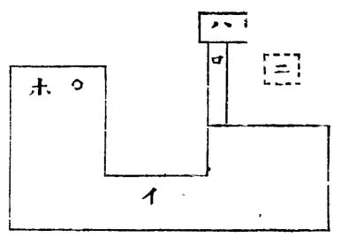
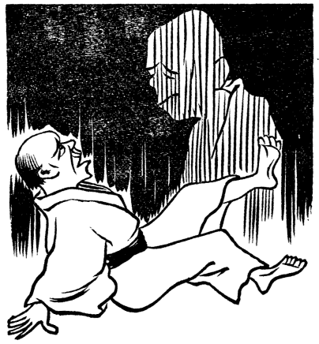
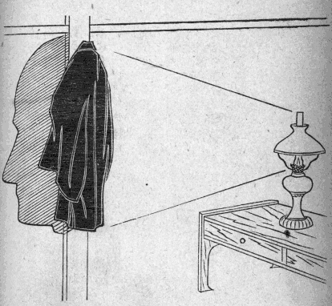
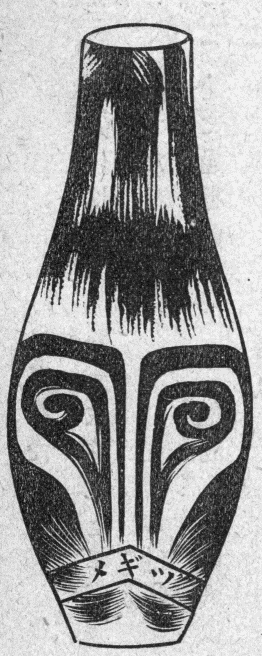

明治三十一年のむかし、『妖怪百談』を著し、つぎにその「続編」を作りしが、望外にも世間より歓迎せられ、再三再四、版を重ぬるに至りたるも、数年前に残本全く尽き、久しく購読を謝絶しきたれり。その後さらに再版せんと思いしも、本書の内容が古人の書を引き、古代の話を伝えたるもの多ければ、そのまま再版するもおもしろからずと考え、絶版のまま今日に至れり。
しかるに、この最近二十年間、全国周遊中、各所において妖怪の実験談を直接に聞知せるもの、または研究会員より妖怪の新事実を報告せるもの、または地方の有志者より新聞雑報の切り抜きを寄送せるもの、および自ら実地につき探知せるもの等、数百項の多きに達したれば、これを収集選択し、また旧著中、明治維新後に起こりし妖怪事件十余項を抜粋し、合わせて百三十項を得、新たに『おばけの正体』の書名の下に
妖怪と迷信とは密接の関係を有し、ほとんど妖怪の八、九分どおりは、迷信より起こると断定して可なるほどなり。ゆえに、本書中に迷信を併記せるも、そのほかになお迷信に関する事項はすこぶる多ければ、他日、さらに「迷信集」を編述する心算なり。
また、今日の学理をもって解説し難き、いわゆる真の不思議と称すべき事項も
大正三年六月
［＃改丁］演述者自ら記す
世間には妖怪があるともいい、ないとも申して、議論が一定しておらぬ。妖怪ありの論者は、なにもかもみな妖怪ときめて、
すべてむかし話に伝わり、あるいは古き書物にかいてある怪談は、もとより信ずることができぬのみならず、今日調査する手掛かりがないから、それよりも、今日世間に起これる実例について研究する方が確実である。その中に原因の不明なるものも多いが、また明瞭になったのもたくさんある。今、ここに妖怪の有無を判定する前に、原因の分かりたる事実談を集めて、世の中へ紹介しようと思う。しかしてその事項は、なるべく明治維新後に起こった出来事に限りたい考えである。
他人のことを紹介する前に、余の自身に実験せし一例を挙ぐるに、およそ今より四十五、六年前、余の十歳前後のころと記憶しておる。ある夜眠りに就き、夜半すぎにフト目がさめたが、
今一つ、余の幼少のときに実験したる話がある。年齢十五、六歳のころ、ある寺の座敷に寝たが、深夜になって目がさめ、四隣
今一つの実験談を申さば、これは二十歳以後の話である。ある年、夏の休暇に勉強したいと思って、二カ月間、箱根山上の元箱根村と名づくる所に農家の座敷を借りていた。元箱根は箱根町をさること八丁、権現神社の下に三十戸ばかり並んでいる小村である。ある夜、晩食をすまし、町の方へ散歩に出かけ、あちらこちら歩き回りて、ハヤ時は十時過ぎになった。いよいよ帰ろうとすると、にわかに大夕立がかかってきた。あたかもそのときは
自分の実験談のほかに他人の話を紹介したいと思う。余が先年、ある学校に寄宿せしに、同窓の一人土肥某が、夜十二時過ぎ室を出でて便所に行く途中、廊下のそばに大怪物の無言にて立ちいるを見た。なにぶん暗黒にして、その状態をつまびらかに認むることできず怪しんで、これに向かい「
先年の『読売新聞』に、東京両国回向院の墓場の間に、亡者の泣き声を聞きたる話が出ておった。ここにその一節を読み上げてみよう。
近来、回向院卵塔場 辺りへ、白衣をまといたる年若き女の亡霊姿を現出することありとて、近傍の居住者、尾に鰭 をつけて風説するにぞ、夜更けには同院境内を通行するもの一人もなかりしが、境内居住者、掛け茶屋の主人某なるもの、一両日前の夜、二ツ目辺りよりの帰途、いまだようやく九時半ごろなりければ、かの幽霊の出ずる時刻にはよほど早し、表門へ迂回 するも面倒なれば近道をとらんと、松坂町一丁目横町裏門を入り、今しも本堂側を横切らんとしたるとき、鼠 小僧墓所石構えの裏手に当たり、女の泣く声聞こえけるに、不審を起こし恐る恐る星の光にすかしてうかがい見れば、このごろの人の噂 にたがわぬ幽霊なりしかば、さては十万八千の焼死人中、今に成仏せぬやからありと見えたりなど考えつつ、身を縮めてその場を逃げ去り、観音堂際なる同業者某方へ駆け込みて、ありし次第を告げ、幽霊なれば別に子細もなきことながら、万一自殺者などにもあらんには、明日の厄介面倒なり、いかがはせんとためらうところへ、同院台所男、足音高く通り掛かるを呼び止め、今みてきたれることを語りたるに、寺男はなにげなくうなずきつつ提灯 携え、本堂南方、鼠小僧の墓所辺りを見回り、ほどなく某方に立ち戻り、「みなさん御安心なさい、幽霊は幽霊なるが、生きた、しかも年若の男女二人にて、連れの女が酒に酔い過ぎて歩行もできぬ始末に、男が介抱しておったのだ。二人とも、ツイ近所で見かける顔です」と告げ、大笑いにて済みたりと。
いかに恐ろしき幽霊も、正体が分かれば笑い草となる。去るころ、奈良県の某新聞にも、「妖怪
事柄は維新前の出来事なれども、勝海舟先生より直接に聞いた話がある。むかし先生の書生時代、夜半過ぎに東京牛込区市ヶ谷の谷町を通られたことがある。この場所は、近年は人家相並んで市街をなせども、むかしは真に深山幽谷の趣があった。ことに夜十二時後となっては、全く人影もない場所である。しかるに、深林の間に青白い婦人が、無
夜中の光り物につき種々の怪談があるから、その二、三をここに紹介しましょう。福島県のある郡役所に奉職せるものの話に、友人とともに夜中旅行せしことがあった。そのとき野外に、数丁を隔ててはるかに火光を発している所がある。その中に、人の
すでに数年前のことなるが、横浜市内にて
横浜市常盤町に、紙商小駒支店松井某方の軒端より、毎夜人魂出ずとの評判高く、市内の者はもちろん、その近在近郷辺りより草鞋 ばきにて見物に押し掛くる者、毎夜何百人より千人以上に達し、その筋の取り締まりも、なにぶん行き届きかぬるほどの雑踏なるよし。その事の起こりは、去る七月中、松井の女房がことのほかの難産にて、いまだ分娩 をおえざるさきに死去したるに、この女房は生前、松井に内々にて愛国生命保険会社と千円の保険契約をなしおりしかば、松井は妻の死後、あたかも拾い物したる思いにて、早速これを受け取りながら、尋常はずれて葬儀を薄くしたるより、死者の遺恨はさこそならめと近所にての風評に続きて、たちまち同家より人魂の飛び出ずるよし言い出せる者あり。近隣の子供三、四人、および菓子屋の職人某、向かい側なる印版屋の主人、同町の生け花師匠某ら、いずれも夜を異にして見たりといい、それより大騒ぎとなりて、米吉の屋前には毎夜人の山を築き、雨戸を攀 ずるもの、戸をたたくもの、石を投げ込む者さえあり。その極み、同家の本店の方にては、これも畢竟 、松井が平素の仕打ちのよろしからざるためなりと、本支店の縁を絶ち、また市中のならずものは松井の弱味に付け入りて同家へ押し掛け、穏やかならぬ挙動に及ぶ者も多しとぞ。さて、人魂の正体はもとよりなんでもなきことにて、女房の死後、幼女が母の来たりたるを夢み、ある夜不意に泣き出したると、またある夜、同家表二階の座敷の格子に白地浴衣 をかけ、その上の釘 に黒き帽子をかけ置きたるを、外方より見たるものありて幽霊なりと吹聴したる間もなく、同家の欄間にはめあるガラスに、筋向こうの印版屋方照り返しランプの反射したるを認めて、人魂なりと迷信したるならんといえり。松井の迷惑はいうまでもなけれど、かかることに立ち騒ぎて、心あるものの笑いを招く人々こそ気の毒なれ。
世間の幽霊談は、大抵この一例によりて推測するを得べしと思う。先年、余が長崎市に滞在せしとき、市内の一覧橋に深夜、一怪物の火光を発するものが現出するとの評判が起こり、われも彼も争ってその火の玉を見んとて橋上に集まる騒ぎが起こった。そのとき実地に探検したるものありて、トウトウ原因を発見するに至った。橋上より望むに、毎夜十一時後に、およそ十余町離れたる所に火光を発するものが見ゆるも、橋の前後にては見ることができぬ。これは、その橋が平地よりも高くかかっているからである。探検者はあらかじめ、その方角と距離とをシッカリ見定めておいて、その場所に至れば、
先年、余の自宅に一大怪事の起こったことがある。夜十一時過ぎ、下女が便所に行かんとて廊下に出ずると、庭内に白色の怪物の

十五、六年前の『読売新聞』に見えた記事のように記憶しておるが、ある人の茶話中に、己の妖怪と思って驚いた実例を述べてあった。その人はある年の夏
これに類したる話であるが、四、五年前、北海道札幌発行の『
野火、
ある夏の夕、数名相伴い野外に納涼に出かけたるに、突然南の空より一塊の火の玉、尾を引き声をなして、非常の速力にてこちらを指して飛びきたるにぞ、一同大いに驚き、これがいわゆる蜘蛛火ならんと、急ぎて内に入り雨戸を閉じたるに、その火はやがて庭の大樹にあたりて落ちたるごとく思われしより、戸のすきよりうかがい見るに、火の影絶えてなし。よって一同庭へ下り、月光をかりてここかしことさがし見るに、その形、橙実 ほどの焼け土の一塊が、大樹の根より三、四尺離れたる所に落ちてありしを見いだしたり、云云 。
この報告によれば、蜘蛛火はこの説明いまだ全く信許し難いけれども、わが国にて古来、海上に竜灯が上がるといい伝うる中には、このように漁火を誤り認めたるもあるであろう。
先年、
先年、熊本県漫遊の際、八代郡長が不知火について話されたことを記憶している。郡長はたびたび不知火を実見したことがある。その後、八代の海浜にて夕日の沈まんとするとき、海中の州をなせる浅き所に双方より潮が来たりて打ち合い、これに日光が斜めに照らし込み、その波の光るありさまは不知火の状態とよく似ていた。このことより推測するに、天草洋と有明沖には海中に浅き所がある。そこへ満潮のときに双方より潮が押し寄せ来たり、互いに打ち合って光を発するのが、不知火の起こる原因であるとの説であった。
余は先年、不知火の出ずる季節に島原半島に滞在したから、一夜見物に出かけたこともあったが、そのときは見ることができなかった。しかし他人の実見談を聞くに、暗夜にして満潮の時刻に限るとのことである。これを八代郡長の説にあわせ考うるに、高潮の節、海水の互いに打ち合うときに、塩分の摩擦によりて起こる光を望んで、不知火と名づけたるものであろう。暗夜舟をこぐときに、海水が光を発すると同一の道理である。余は、この説をとって、不知火の正体としたいと思う。
東海線にも三陽線にも起こった出来事にて、一時新聞に見えていたが、夜半過ぎに汽車が進行している間に、向かいの方よりしきりに汽笛を鳴らす音がする（そのときは鉄道がすべて単線であった）。今、汽車の来る時刻でないが、なんの汽笛であるか分からぬけれども、もしや臨時汽車の来たらぬとも限らぬから、衝突を恐れて途中停車した。しかるに、先方より汽車の来る気色さらにない。そこで再び進行して、無事につぎの駅に達したことがある。そのときの評には、「狐が汽笛を鳴らしてだましたのだ。その証拠には、翌朝その線路に、狐が汽車に圧せられて死んでいた」と申した。余の説にては、先方より汽笛の聞こえたのは、決して怪しむに足らぬ。深更になって世間の静まりたるときには風の都合にて、他線路あるいは遠方の汽車より発する汽笛が、わずか数丁離れた所のごとくに聞こゆるものであるから、これを他の汽車の向こうより来たるのと聞き違えたのであろう。その話は西洋にもたびたびあるように聞いている。
ただし、狐が死んでいたなどは話に尾を付けたので当てにならぬ。もし、狐が人をだますために汽笛を鳴らしたものとせんか。進行を継続する場合に、なにゆえに線路を逃げ出さぬか、それこそ奇怪千万である。もし、果たして翌日狐が倒れていたとすれば、それは偶然の出来事というものであって、汽笛には関係のない事柄と見なければならぬ。
明治三十八年発行の『電報新聞』に、
本年八月、学友と旅行を企て、北河村という所を過ぎた。この村の端を流るる玉川に千丈ヶ淵というのがある。ここにあまたの人々群集して、なにごとか協議していたからたずねたところが、「昔、ある僧がこの淵の主なる女竜を退治しようと思って身を投じ、僧が代わって主となり、ここを通るときは必ず悪魔に襲わると伝えている。しかるに、今朝その僧の遺骸が浮き上がったために、祟 が恐ろしさに祠 を建てて祀 ろうと思って、今、協議中である」と語った。かく聞いて学友は、平素冒険的の気性のある男だから黙止していられない。よし、その本性をあらわしくれんとて、村人のとどむるも聞かず、強いて筏 に乗り込み漸々進んで行った。こっちにては村人ら、いかなることかと手に汗を握って、まばたきもしないで見つめていた。やがて学友は、主 の浮き上がっているそばに進んで、その頭のようなものを力限り引き上げた。こはいかに、大なる瓢箪 であった。中には大きい鰌 五、六匹入りて口をふさいであるために、あたかも生きているように動くのである。川上の村落で子供らの玩具とせし物が流れてこの淵にとどまりしことと分かり、村人らもはじめて迷信を知り、大いに喜んで主退治の労を感謝した。
世間の人は全く探検せずに、はじめより妖怪の所為と断定するために、化け物談が多くなるのである。函館発行の『北海新聞』に、およそ十年前、幽霊に関する
一書生、東都に留学中、郷里にて未来の妻君と定めたる一少女の訃音 に接せり。時たまたま転居して、別に新たなる下宿屋に行けり。その翌朝、机上に女の髪の毛一筋落ち散りてありたれば、その端をつまみて戸外にすてたり。けれども、その明くる朝も明くる朝も、必ず一筋の女の髪の毛、あるいは机上に、あるいは書函の上に、またあるいは障子や唐紙に、いつもこれを発見するより神経を起こして、必ずかの少女が毎夜来たって残しゆくものに相違なしと青くなって、別懇にしている友人をとまりに来てもらいたれど、毎朝、髪の毛の机や障子、唐紙になしというなし。
学生はますます青くなり、食事もろくに食えずなりたれば、下宿屋中にて、だれの部屋に幽霊が来ると大評判になり、なかには短刀や棍棒 を提 げて、夜中ひそかにその室外をうかがう者さえあるに至りたれば、下宿屋にても、もしや書生に怪我 でもありてはと、戸籍調べの巡査にこのことを話すと、「それは捨ておかれず。しかして髪は油がついているかどうか」とたずねられて、ナールとばかり女将 が気が付いたから、女部屋に掛けてありし箒 をあらためて見て大笑い。書生が毎朝起きて洗面に行った後に、下女が女部屋の箒を持って行ってすぐと掃除しおったから、いつの朝でも、その不潔下女の髪の毛が箒から落ちていたのであるとわかり、巡査も居合わしたる客も書生も腹を抱えて、下女ばかりがしたたかに戒められたということであるという。
書生すら神経を起こすとこのようであるから、婦人や無教育の人の、妖怪に迷わさるるは無理ならぬことである。学生はますます青くなり、食事もろくに食えずなりたれば、下宿屋中にて、だれの部屋に幽霊が来ると大評判になり、なかには短刀や
先年夏の夜、東京神田区東福田町、倉本某方の左手にある
都会には妖怪屋敷と申すものが多く、その家に住居すると病者や死人ができるから、避け嫌う風がことにはなはだしい。日本中にては東京に最も多いように思わる。余のこれまで取り調べたる妖怪屋敷を見るに、家屋の光線の取り方がよろしくなく、空気の流通が悪くして、室内は薄暗く、陰気に感ずる家に多い。しからざれば低地湿地の家に多いが、その他にも種々の事情あって、妖怪屋敷の評判が立ってくる。その一例として、ある人の実験談を話しましょうが、その人は東京の化け物屋敷と唱えらるる家に住せしことがある。その家にては深夜になるに従い、カチャンカチャンという一種の奇怪なる声が絶えず聞こえてくる。いかにも妖怪の音らしく感ぜらるる。しかし、これには必ずしかるべき原因あるべしと思い、よくよく取り調べてみれば、その家の井戸の中に、途中よりサシ水の穴ありて、これより落ち込む水の滴る音なることが知れた。多分、これまで、かかる雑水のまじれる井水を飲むために、病人も出でたるに相違ないとの説であった。妖怪屋敷も原因をただしてみれば、こんなもの。
余がむかし
宮崎県宮崎郡田野村にて、村長より直接に聞いた話に、その村のある民家に、二階の人のおらざる所に、毎夜キー、キー、キーと鳴る音がするので、妖怪の仕業に相違なかろうとて、たちまち大評判となり、わざわざ探検に出かけるものも、みなその音を聞いて、驚きかつ恐れて帰って来る。そこである夜、村長が出かけ、二階の片隅にひそんで静かにうかがっていたるに、一頭の
これと同様の事実が『青森新報』に出ていたことがある。その話は左のとおり。
なんとやらいう土地の百姓家で、夜になると雪隠 のそばへ妖怪が出る。もっとも姿は見えないが、ときどきギーギーという怪しい声が聞こえるので、家内中の恐怖はもちろん、近隣の者まで驚き怪しんで評判となったが、その原因がおかしい。糸車の古いのを、雪隠の天井へ投げ込んで置いたまま、久しくなって忘れていたのを、鼠めが車の輪へつかまって、南京 鼠のように曲芸をやっておもしろがっていたのだ。その都度、油の切れた車がギーギーと音がするのを妖怪と思ったので、ずいぶんばかげたことだが、妖怪などというものはみなこの類であろう。
人は万物の長といいながら、鼠の曲芸に驚かされるなどは笑止千万である。大樹の老いさらばえたるものには、往々
これと同様の話が先年、仙台の新聞にも見えていた。ころは明治二十六年五月ごろ、福島県石川郡石川町字下泉、鎮守の古びたる
近ごろ新潟市にて発行せる新聞中にも、右同様の怪談を載せてある。その大略を抜記すれば、
村松町より一里をへだつる中蒲原 郡橋田村大字 西四つ屋、曹洞宗泉蔵寺大門先なる関谷安次宅地内に、数百年を経たる高さ五間、幹の周囲約一丈の大欅 あり。去る二十三日の夜九時ごろ、同字関谷清一郎の弟清次が、大沢なる地蔵尊の祭典に赴きたる帰途、くだんの場所に差しかかるや、携えたる提灯 ふと消ゆるとひとしく、病人のうめくがごとき一種のうめき、大欅の根元より発したるため、清次は身の毛をよだててふるい上がり、踏む足しどろに逃げ帰り、家人にも告げず寝込んでしまう。
越えて一日、同字若もの三名、午後十時ごろ同じ場所を通行する折、例の怪しきうめき聞こゆるにぞ、これまた青くなって逃げ帰り、かくと村内へ告げ回る。伝え聞ける人々五十余名、二日夜、各自提灯を携え赴きたるところ、九時までなんともなきより、一同不平だらだら、引き返さんとする折、例の怪しきうなり、盛んに起こる。一同恐ろしさを通り越し、不審の感に打たれ、翌日同所を探検すべく申し合わせて引き上ぐ。
翌朝、村民一同大欅の根元に至り、幹から枝を探り見たれど、老樹にあるべき洞穴さえなく、少しも怪しき筋なく、一同不審の念に打たれながら手を引く。これを聞ける同村軍人分会長ならびに青年会員は、われこそ究めくれんずと、三日の夜、一行二百余名および巡査、区長、そのほか村のおもだち二十余名、おのおのくだんの場所に至り、今か今かと待つうち怪しのうめき聞こゆ。声の発する箇所は根元なりといい、樹上なりといい、十数間はなれて群がる婦女子の耳へは、あたかも木魚のごとく聞こゆという。
一同、どれが本当やらわけがわからず、あっけに取らる。かくて、怪物は九時ごろより午前二時ごろまで盛んにうめき立て、一回二、三百もうなりては二十分ぐらい休み、さらにうめき出す。今は人々恐ろしさも忘れておもしろがり、毎夜数百人押しかけ行きはやしたつれば、怪物また図に乗りてか、盛んにうめき立つ。ために、泉蔵寺大門先には大道店さえ一、二軒できたる始末。村民は原因不明なるため、金甕 のうなりなりとか、昔の墓地跡なれば亡霊の仕業なりなど、噂 とりどりなりとぞ。
右のとおりであるが、新聞の方ではその原因不明なれども、余が熊本県越えて一日、同字若もの三名、午後十時ごろ同じ場所を通行する折、例の怪しきうめき聞こゆるにぞ、これまた青くなって逃げ帰り、かくと村内へ告げ回る。伝え聞ける人々五十余名、二日夜、各自提灯を携え赴きたるところ、九時までなんともなきより、一同不平だらだら、引き返さんとする折、例の怪しきうなり、盛んに起こる。一同恐ろしさを通り越し、不審の感に打たれ、翌日同所を探検すべく申し合わせて引き上ぐ。
翌朝、村民一同大欅の根元に至り、幹から枝を探り見たれど、老樹にあるべき洞穴さえなく、少しも怪しき筋なく、一同不審の念に打たれながら手を引く。これを聞ける同村軍人分会長ならびに青年会員は、われこそ究めくれんずと、三日の夜、一行二百余名および巡査、区長、そのほか村のおもだち二十余名、おのおのくだんの場所に至り、今か今かと待つうち怪しのうめき聞こゆ。声の発する箇所は根元なりといい、樹上なりといい、十数間はなれて群がる婦女子の耳へは、あたかも木魚のごとく聞こゆという。
一同、どれが本当やらわけがわからず、あっけに取らる。かくて、怪物は九時ごろより午前二時ごろまで盛んにうめき立て、一回二、三百もうなりては二十分ぐらい休み、さらにうめき出す。今は人々恐ろしさも忘れておもしろがり、毎夜数百人押しかけ行きはやしたつれば、怪物また図に乗りてか、盛んにうめき立つ。ために、泉蔵寺大門先には大道店さえ一、二軒できたる始末。村民は原因不明なるため、
今より十年前発行の『電報新聞』に、
神奈川県中郡秦野地方の習慣として、盆の十三日の晩より三日間、毎夜祖先のお墓へ参詣 し、碑前にて麦からを燃やす例あり。今を去る五年前、例の墓参をなし、碑前にて麦藁 を燃やし始めしに、不思議や、墓所の後ろなる大きさ二抱えに余る古木の欅、高らかに経をよみ始めたり。されば、あまたの墓参人にわかに騒ぎ立ちて、世には不思議なこともあるものかな、欅が経をよむとはいかにも不審なることぞと寄り集まり、さらに耳をそばだてて聞きしに、なるほど経をよむ声聞こゆ。しかして、麦藁のますます盛んに燃え、パチパチとはぜるに従い、いよいよ大音を発してよみけるに、たちまち人の噂ひろまり、欅が経を唱うるぞと、われもわれもと来たり聴くもの、あたかも縁日のごとし。また、小店を張るものもあるに至れり。ようやく盆も過ぎければ、早速世話人ら集会をなし、相談のうえ欅をきることに決議ととのいたり。さて、杣 をしてきらしめしに、その切り口より血潮は滴々と流れ出でたり。ますます不思議に不思議を重ねて、しきりに樹のきれるを待ちおりしに、やがて倒れたるを急ぎ見れば、欅のうしろに縞蛇 の腹部より切断したると、熊蜂 の大いなる巣とありたり。
つまりその原因は、欅の空洞に熊蜂が巣を作りし所へ、蛇が蜂の子を取らんとてその巣にさわり、無数の蜂が一時に鳴り出だしたる出来事である。ふくろう、みみずくのほかに、かかる樹鳴の正体もあることを注意せねばならぬ。右に類似せる話が今一つある。先年、水戸市の士族屋敷の古屋を借りて住んだものがあった。その家は久しく空き家になっておったということだ。この家に引っ越して以来、深夜になると、座敷の床の間の裏に当たりて一種奇怪なる音がする。その音はモーンという声である。もし家の裏手へ回ってみると、座敷の中の方に聞こゆ。よって、家の内か外か分からぬ。いかにも不思議であって、なにか化け物の仕業であろうということになった。その話を聞いて、親類や友達が集まり通夜したことがあるも、みなその音の奇怪なるに驚かぬものはない。しかるに、そのうちの一人が申すには、床の間の壁の中に相違ないから、この壁を破って見ようというも、他の人は恐ろしがりて賛成するものがない。しかし、当人はドウしても見届けたいと思い、その音のする場所を目がけて一刀を差し込んだ。翌日この穴からのぞいて見たれば、床の間の壁と外の壁との間に、一尺ばかりの空所があった。その空所へ蜂が大いなる巣を作っていたことが知れ、夜分のモーンという怪音は、その巣に数百の蜂がやどっている所へ、
信州
先年発行の『
府下南千住町の法華庵は、昔の刑場なる小塚原通りにて、境内および近所には、千人塚、無縁仏など、囚人の亡魂を祭りし墳墓あり。黐 、樫 、その他の雑木生い茂りて、すこぶる薄さびしき所なるが、四、五日前より天気快晴なるにもかかわらず、この境内の樹木より、ポツリポツリと雨雫 が落ちきたるを近所の者が認め、「不思議だ、不思議だ」と言い触らせしより、たちまち大評判となり、毎日黒山のごとき人だかりにて、「むかし、この所にて首をはねられた囚人が、無縁仏となり得道解脱 ができずして、地獄の中に泣き叫ぶ、その涙雨が降るものならん」と噂 し合う、云云 。
その原因は、この場所が日本鉄道隅田川線荷物列車踏切の南に隣りいるゆえ、汽車が通行の際、世間には
東京府下南葛飾郡葛西村字大島の共同井戸より、フトこのごろの五月雨 続く夜ごとのさびしさにつれて、青白き一団の陰火立ちのぼり、四、五尺の高さにてパッとかき消さるるを見たり。彼も見たりわれも見たりとて、おいおい噂 広まりゆき、昨今はわざわざこれを見物せんとて近村より出かくる者もあるより、かかる場合の習慣にて種々の浮説これに伴って起こり、「かの井戸は何年前、これこれの女が恨みをのんで入水せしかば、その亡魂の夜な夜な不思議を現ずるものなるべし」など、真実らしく語り伝えて、夜に入れば、井筒の辺りは人山を築くばかりに集まれる由。
これ、余は先年、某新聞にて読んだことを記憶している。その事柄は、東京新橋尾張町辺りに、夜ふけ、人
世間には、夜中、石を投げて人を驚かす怪事が昔から伝わっている。これを
京都上京区元六六組北町、織物職藪田 喜七郎方にて、ある夜十一時ごろより、にわかに小石の雨が降りきたり、毎夜同じ時刻に降ってくる。その所業者をたずぬるも一向見当たらぬにぞ、さては天狗か狐狸の所業かとて、近所近辺の一問題となりたるより、警官がわざわざ出張のうえ取り調べたるに、ただ疑わしきは同家の雇い女おしながその時刻に見えなくなりたるより、もしやと思いて跡をつけゆくと、果たしてその女はほど近き竹藪の内に入り、小石を拾いては投げはじめるにぞ。さてこそ正体見届けたりと、ただちに引き捕らえて取り調ぶるに、元来このおしなは、丹波国南桑田郡吉川村、平民菊島市松の妹にて、二年前より右の藪田方に雇われいたるが、ちょうど同家に寄留しいる荒木常太郎に通じいるゆえ、主人喜七郎はこのことをかぎつけてそれとなく小言をいうより、わが身の淫奔 を思わず、主人の小言を恨んでいたところ、去る二日のこととか、仕事の不出来より、またまた厳しくしかられたを根に持ち、去る五日の夕方、喜七郎が行水している折、そっと藪陰から小石を投げしも、喜七郎はおしなの所為と気づかず、狐狸の悪戯 といいおるに、グッと乗りがきて、それより毎夜そっと抜け出しては、小石をばらばら投げつけて、ひそかに鬱憤 を晴らせし由、包まず白状に及びたるにぞ。なお、その不心得を説諭のうえ、主人喜七郎へ下げ渡されしとは、女に似合わぬ悪いたずらなり。
この一例に考えて人為的なることが分かる。明治二十七年ごろの『奥羽日日新聞』にも、投石の探検始末を掲げてあった。その大要は左のとおりである。
仙台市内良覚院町の石投げ怪聞について、ある夜、某氏の探検談を聞くに、同夜は暑熱のはなはだしきにもかかわらず、納涼かたがた見物に来たるものおびただしく、ために良覚院の細横町は通り切れぬほどなりし。さて、今や怪石の降りくるかと待つほどもなく、九時三十分ごろに至り同町の地先にて、突然降下せしとて拾い上げたる石塊 を見るに、あたかも数年間土中に埋まりいたりとおぼしく、十分水気を含蓄せる、縦四寸ばかりの楕 円石なり。探検者はその拾い上げたる人に目星をつけ、それとはなしに始終その人に尾行するに、彼はこれを気づきたる風なり。東西南北と群集の中を駆け回る様子なれば、なおも尾行するに、三十分ほどをへだてその人の右手に当たり、ドシリという音せしが、彼はまたここにも降りたりと、自ら拾い上げて、さも珍しそうに諸人に示しおれり。探検者はますますこれを怪しみて、なにげなく群集に押されたる風を装い、突然彼と衝突せしに、彼が左袂 には確かになにやらん堅きもの二、三個入れおけり。よって探検者は、怪聞の原因を左のごとく説明せりと。
一、降下せる石塊はいつも同一の人間に拾い上げらるること。
一、拾い上げたる人の袂には石塊を入れあること。
この探検談によって、一層人為なることが明瞭である。一、拾い上げたる人の袂には石塊を入れあること。
近く大正年間になって鹿児島に起こった一怪事も、ややこれに類似している。ここに『鹿児島朝日新聞』を抜粋しようと思う。
市内永田町、山下虎之助氏宅に過般来怪奇の出来事あり。春の日の吹く風生温 く、人の気も変になろうとする真っ昼間、机の上の絵の具がスーッと消えて、井戸の中に血のごとく溶けていたり、化粧瓶がひとりでに走り出したり、ハッと思うと大きな石が音もなくコロコロと座敷に転がり込んでくるという、誠に物騒千万な話。家族はとうとういたたまらず、去る八日、冷水町へ移転してヤレヤレと安心の胸なでおろし、その日ばかりは事もなく過ぎた。近隣の人も、さては家屋敷に因縁があったのだろうと噂 していたが、中には行くさきざきまで気遣って、人の疝気 に気をもむ連中も少なくなかった。
果然果然、やはり魔がさしていたのであろう。九日になると、金魚が一匹姿を消してしまった。その翌日は、下駄 が一足どこへか消えた。そのまた翌十一日には、朝から茶盆大の石が縁側にコロコロッ、砂がバラバラ、障子がスー、雨戸がガタリと開く。また、石が飛び込むという物騒さ。細君が念のため記しておいたところによると、石が十一回、砂の舞い込んだことは数知れなかったという。
この風説が伝わるや、当警察署では、いかにも奇怪千万のことなるが、とにかくなにものかの悪戯に相違なしと見当をつけ、十一日午前九時より、巡査部長ほか一名の署員、私服にて現場へ出張し、同家の内外を警戒したるが、その間も例のとおり盆大の石がコロコロ、砂がバラバラ、障子がスーッという始末に、業を煮やすこと一方ならず。種々苦心の結果、下女西桜島村武、当時市内池之上町講道学舎付近居住、新助長女坂上ツルの挙動いかにも不審の点あるを発見し、細君に計り下女に命じて台所にて湯を沸かさせ、台所口の六畳の障子をしめて、部長は畳に体をすりつけて障子の穴よりうかがい、巡査は屋外に潜みて厳重に監視しいたり。時まさに三時四十分、下女のツルはイソイソとしてやかんをさげ、戸外に出でたり。見張りの巡査いずれも目を皿のごとくにして見つむれば、こはそもいかに、ツルは赤黒きチヂレ毛を逆立て、目は異様に輝き、あたかも一寸ばかりも飛び出したごとく、口をキリリと結んで庭の片隅に赴き、飛鳥のごとく砂をつかむやいなや、屋内目掛けてバラバラッと投げ込んだ。アトはケロリとしてニヤリと破顔一笑、やかんをさげて台所に入り来たり、そこにそろえてあった巡査の表付きの下駄ヒョッとつかんだ形相のものすごさ、さすがの巡査も、ゾッと身の毛が立ったという。
かくして、ツル女をきびしく取り調べの結果、ついに化け物の正体を現し、手品の種が分かったということだ。前に掲げた方は、恨みを晴らすとか悪戯の心から出た所業であるが、この鹿児島の出来事は、一種の発狂的に属するものである。余はこれを投石狂と名づけておいた。すなわち病的作用である。果然果然、やはり魔がさしていたのであろう。九日になると、金魚が一匹姿を消してしまった。その翌日は、
この風説が伝わるや、当警察署では、いかにも奇怪千万のことなるが、とにかくなにものかの悪戯に相違なしと見当をつけ、十一日午前九時より、巡査部長ほか一名の署員、私服にて現場へ出張し、同家の内外を警戒したるが、その間も例のとおり盆大の石がコロコロ、砂がバラバラ、障子がスーッという始末に、業を煮やすこと一方ならず。種々苦心の結果、下女西桜島村武、当時市内池之上町講道学舎付近居住、新助長女坂上ツルの挙動いかにも不審の点あるを発見し、細君に計り下女に命じて台所にて湯を沸かさせ、台所口の六畳の障子をしめて、部長は畳に体をすりつけて障子の穴よりうかがい、巡査は屋外に潜みて厳重に監視しいたり。時まさに三時四十分、下女のツルはイソイソとしてやかんをさげ、戸外に出でたり。見張りの巡査いずれも目を皿のごとくにして見つむれば、こはそもいかに、ツルは赤黒きチヂレ毛を逆立て、目は異様に輝き、あたかも一寸ばかりも飛び出したごとく、口をキリリと結んで庭の片隅に赴き、飛鳥のごとく砂をつかむやいなや、屋内目掛けてバラバラッと投げ込んだ。アトはケロリとしてニヤリと破顔一笑、やかんをさげて台所に入り来たり、そこにそろえてあった巡査の表付きの下駄ヒョッとつかんだ形相のものすごさ、さすがの巡査も、ゾッと身の毛が立ったという。
今より二十三、四年前のことなるが、和歌山市外のある民家で種々の怪事起こり、あるいは石を降らせ、あるいは物がなくなる等ありて、和歌山市のものにて現場へ探検に出かけしところ、本人の頭へ灰をかぶせられ、驚きおそれて帰り、余にその説明を頼んできた。余はこれを聞いて、「ほかより
和歌山市の事件より二、三年も前、佐賀市のある家に、
投石の怪事にして、原因を発見せし例は前に掲げしほかに多々あるが、そのうちの一例は先年、群馬県高崎市
先年、青森県浅虫村に一大怪事の現出せしことがあって、その当時、全国の新聞に報道してあった。今ここにその大略を記すれば、浅虫の山手に当たる所に貸家がある。その家に突然、神棚にありし鈴が落ちきたり、そこに載せてあるろうそく立てが落ちきたり、その飛ぶや別に音なく、ただ落つる際に大いなる響きを発するのみである。これより引き続き種々の物品が飛び出し、
今一つ、投石事件につき紹介したい件がある。明治四十一年に福島県に起こった一大怪事につき、余の方へ、「出張して取り調べてもらいたい」と申し込んできたが、その詳細のありさまを聞けば、いずれのところに原因があるかを推測することができる。よって、出張せずに注意を与えておいたところが、果たして予想どおり事実が発覚した。その
福島県岩瀬郡白江村の農、西脇荘八方では、昨年春いずこともなく突然、屋敷へバラバラと木の実の降ってきたのをはじめとして、払暁の四時五時、夜の六時ごろから十時ごろまでの間、毎朝毎夜こぶし大の石が降ったり、台所道具が自然と座敷へ転がり出したり、種々の怪異が打ち続いて、いかに研究しても到底、人為の所為とは思われぬで、たちまち界隈 の評判となり、隣村からわざわざ見物に出かける者ある始末となったが、土地の故老の語るところによると、同村の山中にはその昔、年経し老猿がすんでおって、村内の農家に種々の悪戯をしたことがあって、その当時も最初はなにものの所業ともわからなかったが、そのうち老猿の姿を発見したものがあって、村民こぞって山狩りをして、ついにこの猿を射殺したことがあるというので、今度も猿の悪戯ではあるまいかと種々研究してみたが、いかに注意しても、怪異のあるときとその前後に、猿らしい姿さえ認め得たものもない。
ところが、怪異は夏を過ぎ秋となっても継続して、ことに人語を鋭敏に聞き分けて、化け物の悪口でもいえば不思議は一層激しくなるので、評判はいよいよ高くなるばかりであるから、所轄の須賀川警察署長もすててはおけず、同家に出張して一夜研究に夜を明かしたが、この夜もやはり署長のおる座敷へバラバラと二回ほど木の実を降らしたが、その正体はついに発見されなんだ。こんな始末で、同家の家人の心痛はひととおりでなく、神の祟 であろうかと加持祈祷 に手を尽くしたが、それも一向効顕 がなく、怪異は相変わらず継続するので、主人の荘八はそれがために、いたく神経を悩まして病臥 する仕儀となった。
そこで同村の渡辺某がすこぶる同家に同情を表して、この上は井上円了博士の研究を煩わすより道はあるまいと、旧臘 ことの次第を詳細博士のもとへ書き送りて、博士の出張を求めてきたが、博士は、前例によれば家人の内にこの妖怪が潜んでおるのであろうと鑑定して、まず家族一同の年齢とその性質を報道するように返事をした。それに対する先方の返答は、同家は荘八のほか、妻ふぢ、長男捨重、同人妻みな、次女よし、次男寛次郎、三男健次、孫要一、下女の九人暮らしで、病床にある主人の荘八は多く人の言を信ぜず、人が是といえば非という変人である。その他、すべて普通の田舎風の質朴な人たちで、ただ一人下女のおこうだけは、ふとりじしのどこか間の抜けた、いつでも眠っておるような女で、人が呼んでも、とき経ねば返事をせぬという風な女であるということであった。年齢は十五歳とのこと。
そこで博士は、「それでは出張するまでもない。その女の動作に注意を払え」と再びいい送ったところで、それに基づいて渡辺某がその女について研究してみると、それと手もとは見届けられぬが、怪異の起こるごとに真っ先に騒ぎ出すのはこの女で、昼間の戸外でも、この女が連れ立っておるときは、どこともなくバラバラと石の降ってくる不思議がある。そのうえ、同家に一泊した翌暁、前夜釜 で煮て食い尽くしたはずの甘藷 が押し丸められて、渡辺の座っているわきへゴロゴロと転がって来たときなど、どうやらこの女のいた方面から来たらしいので、いよいよこれはこの女が怪しいと注目して、この女だけを他家へ預けたところが、不思議はそれ限りはたとやんだので、もはや出張を煩わすまでもないと、このほど再応、博士のもとへ通知があった。
これで妖怪の正体も見あらわされたわけであるが、博士の言によると、石が降ったり、突然屋敷に怪火の燃え出すなどは、従来多く類例のあることで、研究した結果、その発頭人は、多く十五、六から二十歳前後の、少し間の抜けたような女であることが例であるが、これをやる当人は、多く利害得失の関係以外に精神上に異状を起こし、そのために生ずる一種の病的作用でかかる所業をするので、たびたびやるうちにその方面に著しく精神が活動して、その手段はいよいよ巧妙になり、その間にはおもしろ半分、妖怪の手伝いする酔狂人もできてくる。こうなるとおおげさになって、平生なればしまいなくしたですむものさえ、妖怪が隠したということになるもので、この病的発作の激しい女になると、不思議に行いをやった後で、自分は全くなにをしたか記憶しておらぬものさえあるが、かかる女でも二、三年、かかる所業を継続した後、全く発作前の普通の女となって一生を暮らすこともあって、畢竟 これは、一時性の一種の精神病とも認めることができるのである。
これに類したる怪事が、それより数年前に山形県関山村に起こったことがあって、出張を申し込んできた。そのときも余の指示せしとおり、家族中に十九歳の白痴の者あって、その者の所為なることが発覚された。ところが、怪異は夏を過ぎ秋となっても継続して、ことに人語を鋭敏に聞き分けて、化け物の悪口でもいえば不思議は一層激しくなるので、評判はいよいよ高くなるばかりであるから、所轄の須賀川警察署長もすててはおけず、同家に出張して一夜研究に夜を明かしたが、この夜もやはり署長のおる座敷へバラバラと二回ほど木の実を降らしたが、その正体はついに発見されなんだ。こんな始末で、同家の家人の心痛はひととおりでなく、神の
そこで同村の渡辺某がすこぶる同家に同情を表して、この上は井上円了博士の研究を煩わすより道はあるまいと、
そこで博士は、「それでは出張するまでもない。その女の動作に注意を払え」と再びいい送ったところで、それに基づいて渡辺某がその女について研究してみると、それと手もとは見届けられぬが、怪異の起こるごとに真っ先に騒ぎ出すのはこの女で、昼間の戸外でも、この女が連れ立っておるときは、どこともなくバラバラと石の降ってくる不思議がある。そのうえ、同家に一泊した翌暁、前夜
これで妖怪の正体も見あらわされたわけであるが、博士の言によると、石が降ったり、突然屋敷に怪火の燃え出すなどは、従来多く類例のあることで、研究した結果、その発頭人は、多く十五、六から二十歳前後の、少し間の抜けたような女であることが例であるが、これをやる当人は、多く利害得失の関係以外に精神上に異状を起こし、そのために生ずる一種の病的作用でかかる所業をするので、たびたびやるうちにその方面に著しく精神が活動して、その手段はいよいよ巧妙になり、その間にはおもしろ半分、妖怪の手伝いする酔狂人もできてくる。こうなるとおおげさになって、平生なればしまいなくしたですむものさえ、妖怪が隠したということになるもので、この病的発作の激しい女になると、不思議に行いをやった後で、自分は全くなにをしたか記憶しておらぬものさえあるが、かかる女でも二、三年、かかる所業を継続した後、全く発作前の普通の女となって一生を暮らすこともあって、
明治維新のはじめに、京阪地方より東海道筋へかけ、神様の御札の降ったことがあった。一時、世間の大評判となって騒ぎ立てたことがある。当時、御札の降りきたりたる家にては、神の
三州のある村にて社内の古墓を発掘したところが、村内一般に必ず神の
先年、
先年『
石州者の田中太七というは、俗にいう稲荷下ろしにて、女房おきぬとともに神戸へ来たり。湊 村の内石井村の島田平四郎が稲荷の信者なるを聞き込み、夫婦して同家へ出かけ、「私には諏訪 稲荷が乗り移りおれば、私がいうとおりを守るときは、いかなる望みといえどもかなわざることなし。それが嘘と思うなら、この白紙に金を包みて稲荷に捧げ、一月ないし二月と一心に祈祷 せしうえ開いて見れば、五円の金は必ず十円となり、百円のものはきっと二百円になりおること、さらに疑いあるべからず」と、まことしやかに述べ立てて、ついに平四郎を欺き、四十円の紙幣をくだんの白紙に包み、神前に供えさせ、それより太七夫婦は毎日同家に通いて、しきりに祈祷をなしおるうち、いつの間にか中なる四十円を抜き取りて、古新聞紙とすりかえ、知らぬ顔でおりしも、夫婦の金遣い近来メッキリ荒くなりしところから、その筋の目に止まり、一日、古港通りの木賃宿に酒を飲んでいる夫婦を拘引して取り調べると、平四郎方の四十円はもとより、このほか同じ手段すなわち稲荷をダシに使って、明石郡新保村の西田より十五円、津名郡江崎より二十円、明石郡前田村某より二十三円八十銭をせしめ込み、その他各地の数十カ所において欺き取りしものを集むれば、数千円の金高に上りおりしという。
この事実の真偽は余輩のあずかり知るところにあらざれども、世間にはこの種の妖怪もすくなからざれば、深く注意せざるを得ない。前の所業とよく似ている話を、余が先年芸州漫遊中に聞いたことがある。呉市のある豆腐屋へ、毎夜続いて油揚げ一枚だけ買いに来るものがある。その家にてはいかにも奇怪に思い、一夜主人が「あなたはどちらのお方ですか」とたずねたれば、「今夜は実を明かして申さん。われは当市外に住する
伊予の国にて讃州境に接近せる某村に、ある教会の出張所があって、一切万病、ひとたびここに至って祈願すれば、全癒せざるはないと吹聴しておった。たまたま門前に一人の跛者があって、毎日
広島にて、ある家に幽霊の姿を現し、髪を乱し白衣を着たるものが忍び込み、「ワシはこの家の亡者である。死したれど行くべき所へ行けぬから、このとおり迷っているのだ。ドーゾ、十円の金を墓場へ埋めてもらいたい。さなければ、毎夜幽霊になって出てくる」と申す。そこでその家では、金は惜しいけれども、幽霊のおそろしさにはかえられぬと思い、明日墓場へ埋めて置こうと約束をして、翌朝そのことを親類に相談したれば、「よろしい。われわれが引き受け、果たして幽霊かどうかを見届けてやろう」と申し、その夜二、三人、墓場の近くに隠れていた。間もなく幽霊が墓場に金を埋めてあろうと思い、掘り出しに出かけて来た。いよいよ幽霊の正体を見届けんと待ち構えたる人々、急に飛び出して捕らえてみれば、全くの盗賊であったとの話も、広島県客中に聞いたことである。
これに類したる話を、
鹿児島県
滋賀県愛知郡某村の小学校長が、夜半後に村外の大道を歩いておる間に、恐ろしき大きな顔したる大怪物がその道の真ん中に立ちおるを認め、恐れ恐れ近づき来たるに、ますますその顔が大きく見え、後には手も足も備わっているように見受け、そのときにはもはや恐ろしいこわいの度は通り過ぎて、到底逃るる道なしと考え、このうえはこれと奮闘して死生を決するよりほかなしと思い、奮進して二、三間の所に至れば、怪物の正体はじめて分かって安心したという。その正体は大八車に松の大木を一本載せて引き来たり、夜に入りしために大道にそのまま車をとめおきたるのであった。その大顔と見しは、木の切り口であったとのこと。
福島県田村郡某町長の話に、「かつて警察に在勤中、深夜、人家なき所を独行せしに、道に白き体のものが転々としてころげており、だんだん己の方に近づき来たるを見て大いに驚き、真に大怪物と信じ、これを一撃のもとに退治せんと決し、一刀をふるってつきとめて見れば、なんぞ計らん、墓場に葬式のあったときにかかげたる白
むかし、余が駒込
これに類したる幽霊談は、先年発行の『
世間にときどき奇を好むものあって、化け物や幽霊を偽造し、人を驚かすをもって愉快とするやつがある。数年前、諸新聞に見えたる
四谷区南伊賀町、法華宗法蔵寺の墓地内に欅 の大樹あり。毎夜、絶頂に青赤の火の玉現るると近傍の取り沙汰 に、いずれも恐れおののき、評判高くなりしに、四谷署より一夜、午前三時ごろ両名の刑事、実否をたださんとて現場へ出張せしに、深更に及びて何者か欅をねらいて瓦石 を投じおるにぞ。こやつ胡乱 と引っとらえ、本署へ引致のうえ取り調べしに、この者は赤坂区青山南町に住する無職業鈴木正司という無頼漢にして、欅に攀 じ登り、西瓜に火を点じて竿 先に縛り、悪戯をなしたるよし白状したれば、説諭のうえ放免さる。
某小学教員が己の経験談として話されたことがある。場所は
先年、越後『長岡日報』に妖怪に関する人々の実験談を掲げ、その中に埼玉県下の幽霊談の一項が載せてあった。
埼玉県榛沢 郡新会という村で、白昼幽霊が出るとの評判が起こったことがある。その幽霊は白衣を着て頭がなく、身体ばかりで宙宇を舞い行くので、出る刻限は午後一時ごろより四時ごろまで、快晴の日に限るという、わがままな幽霊であった。最初、畑中へ農事にいったものが二、三人で見つけたのが、農具を打ちすてて一散ににげかえり、青くなって飯もろくろく食べずに、二、三日病気づいたという騒ぎ。それから話がだんだんひろまって、五、六里四方の大評判。中には弁当持参で幽霊見物に出かけて来る人もあった。さて、その幽霊の正体を調べてみると、そこに白壁の倉がある。西は松原のつづきで、松の木陰をもるる太陽の光線が白壁へ映って、ちょうど首なしの人形のようで、それが颯々 風の吹くたびに動くので、飛び回るように見えるのだ。二、三丁隔ててこれを見ると、いかにも評判どおりの妖怪だが、そばへ近づくと見えなくなって、全くそれと気が付かないのであった。
かかるつまらない幽霊が、世の中には堂々たる大幽霊となって伝わるのが多い。かつて妖怪研究会員の一人、高橋某氏より自身の実験談を報知してきたことがある。その全文を左に。
去る明治二十五年十月ごろなるが、私方にて同村なる某家へ差し置き難き用向きのため、日暮れごろなりしもその家に行き用を果たして帰りけるが、内に乳児のあることなればとて（主婦でありました）、急ぎ足にて案内知れる近道なる畑道をぞ来たりける折しも、日はすでに西山に落ちて四面薄暗く、ことに小雨の降りければ、ひとしおものすごく覚えけるが、わが家よりその家までは道程 も遠からず、この畑道の間には別段さびしき所もなけれども、ただ日蓮宗の宝塔塚およびその近傍に当たり、「ばんげ」の地蔵と通称する所ありき。そのころには、ここに幽霊が出るとか青火がもゆるなどと言い合えりけるが、しかるに二、三町行きしと思うころ、二、三間ほどの前面に当たりて、人の形のごとく六、七尺もあらんと思うほどのものが、長き髪を垂れ、中段以下はおぼろにて分明ならざりしも、少しずつ動きいるがごとくに見えければ、思わずハッと驚き、二、三歩引き下がりしまま見向きもやらず。身震いして引き返し、さきに行きし家に行き、右の由を語りければ、先方にもいと不思議に思い、「しからばその宅まで送り行かん」と言われしも、これを辞して提灯 を借り、本道を回りて帰宅し、右の次第を語りつつ翌朝さらに該所に至り見しも、さる物とては見当たらざりしが、その場と思う所より四、五間ほどへだたりたる所の木の枝にて、千葉（大根の菜）の二、三連かかりありけるを認めたりと。これ、日ごろ聞き覚えたる怪談のことなどを思い出でて、ものすごく思いし折なるに、かかる物の目に触れければ、恐怖の情一時に激発して、かかる幻覚を起こししなるべし。余輩愚俗の妖怪とするは、おおかたこの類ならんか。
この報告を読まば、「幽霊の正体見たり菜大根」といわねばならぬ。昔の話に、
右とよく似たる話は、
ここにまた、江州甲賀郡
今より十四、五年前、横浜伊勢崎町の劇場が焼失したことがある。その跡へ横浜館と名づくる
これは、己の影がガラスに映りたるを幽霊と見誤ったのである。世間普通の幽霊は、大抵この類であろうと思う。

先年茨城県より、天井の怪物につき報道しきたりしことがあった。すなわち、水戸上市小学校教室の天井が白壁にて塗ってあるに、手六本、足六本の怪物の姿が黒々と現れているより、児童らがいずれも恐怖して、あるいは泣き出すもあり、あるいは飛び出すもありて、混雑を起こし、一時は世間の大評判となりたる由なるが、よく取り調べてみれば、手足の跡形のように見ゆるも、その実、新築の際、左官が壁を塗るときに、偶然
今より十四、五年前、東京本所に
本所には七不思議の名物ありて、とにかく昔は薄気味わるき土地なりしが、ここにまたある日の午後四時ごろ、深川区森下町より本所林町二丁目に架かりおる伊予橋上手の水面へ、突然青白き炎の二、三カ所チョロチョロと燃えあがり、風につれて前後左右へうごくさまに人々はきもをつぶし、ただ不思議不思議と騒ぎおるうち、たちまちこの噂 は四方へ伝わり、われもわれもと伊予橋付近へ集まりしが、なんにしても開け放し木戸銭なしのことなれば、正直者の遠慮なしにドシドシと押し寄せ、見る見るうちこの界隈 は人の山を築きて、途方もなき山水のパノラマを描き出し、人々この怪し火について種々なる評を下すうち、「これは全く深川の元木橋下にて、凶漢のため非業の最期を遂げたる二巡査の亡魂ならん」などと好きなことをいっているうち、午後六時半ごろに至り、同所につなぎおる肥船 、南葛飾郡葛西村の船頭音吉といえるが、実否をたださんとて船をこぎ寄せ、水竿にて水面をかき回したれば、そのまま火は消え失せ、これとともに人々四方へ散じて、またもとの伊予橋の光景となりし、云云 。
右の怪火は、石油船の油が流れ出したるを、何者か戯れに火を点じたのであろう。さなければ、近傍の世間にて高山に登るときに、神経麻痺して手足も動かぬようになり、気絶してたおるることがある。これを
古来、温泉山に登るときは、必ず搏飯 と梅干しとを携うべし。梅干しは霧を払うの妙薬にして、搏飯は「だらし」を予防するがためなりとの言い習わしあり。「だらし」とは一種の妖怪的飢餓病とのみあって、いまだこれを明白に実験したる者あらざりしが、長崎高等学校医学部生徒某氏は自らこれを実験し、また他人がこの怪病にかかるを見たりという。今その話を聞くに、右の学生はこのころ暑中休暇を得て帰村せんとする途次、右の村と小浜村との間なる山中字 小田山の頂上、矢筈 の下手辻と称する坂道において、一人の男、野に倒れおるを見たり。その男、学生を見るより幽 かな声にて、「『だらし』にかかりて困りおるゆえ、搏飯あらば賜れ」という。学生はかねて「だらし」のことを聞きおるをもって、用意の搏飯を与えけるに、男は喜びてこれを食し終われば、間もなく力付きて馳 せ下れり。さて、右の学生が実験したるは、その後のことにて、冬季休業のため帰村せんとて、右の山道に来かかりしに、たちまち空腹となり、ひもじさいや増して、身体の疲労尋常ならず。手足しびれてすくみたるがごとく、ちょっとも動けず。強いて足をあぐれば、その重さ千鈎 をひくがごとく、手を動かせば、縛られたるに似たり。困 じ果てて石に腰打ちかくれば別に苦痛も感ぜざるが、立てば身の重さ少しも減ぜず。進退ここにきわまりながら叫べども応ずる人なきに、ぜひなくはうがごとく坂を攀 じ登りはじめたるが、たちまち昏絶倒臥 して死生を弁ぜざるもの十数分、その前は時候にも似ず全身すこぶる熱暖なりしが、このときに至り、はじめて野嵐の冷え渡るを覚えて目をさまし、それより千辛万苦して、わずかばかり離れたる横道の茶店にたどりつき、蕎麦 数椀 食したれば、身心はじめてわれにかえり、寒さも相応に感ずるごとくなりて、まずつつがなく郷里に帰着したり。これすなわち「だらし」に取りつかれたるものなるが、里俗には、なにか食物を携えおればこの魔にかからずといえど、実際においては、鰯 売りの男が鰯の傍らに昏倒 したる例あり。その他、数人の同行者が一時におかされたるの例あり。結局は空腹に乗じて、人体内に一種強力の麻痺 を与うる空気のためなるべし、云云 。
この実験談に照らすに、空腹のときに多く起こるは、高山の空気の人身に影響せること明らかである。これ温泉山に限るにあらず、諸国の高山には往々聞くことである。世に
今一つ、秩父にて聞いたる奇談がある。ある夜、同じ荒川にて網漁に出かけ、ずいぶん多く魚を捕らえたる後に、川上より黒き頭だけ水面に出して流れ来たるものがあったが、非常なる強力にてその網を引き取らんとしている。猟師は思うに、これは
寺院に住するものは、
先年、青森県某氏より、幽霊の代理をつとめた話を報道してきたことがある。
十五、六年も昔の話であるが、ある寺院にしばらくの間滞在していたとき、ある夜十二時過ぎ、他所から帰ってきた。和尚をたたき起こそうと思ったが、待てしばし、この夜ふけに気の毒だと思ったから、本堂の方へ回り、案内の分かっている所の戸締まりを外してやろうと思って、まず按摩 が水泳ぎをするような身振りで、縁側をはい上がり、ここだなと戸へ手をかけてガタガタやっていたところ、どうした拍子か縁を踏み外し、ガタガタドシンと素敵滅法な音をさせて、はいていた高足駄 が脱げて戸へ当たる、身体はころころと庭へ転がり出す。その途端、広縁の角で腰骨を打って痛いことおびただしい。あまり外見のよいものでもないから、声も出されず、そっと起き上がって手探りで下駄をたずねて、一度で懲りたから、仕方がない、和尚をたたき起こせと、再び勝手元へ回り、戸のすきまからのぞくと中は大騒ぎ。和尚は手槍 を小脇にかい込んで、忍び足に本堂の方へ行く。後には比丘尼 の梵妻 が手燭 を袖 におおいながらついている。納所 二人も尻はしょり、一人は麺棒 、一人は鉄火箸 を得物に代えて、威風凜々 というありさま。隅々を見回ってから四人額をあつめひそひそささやき合い、また立ち分かれて見回り歩く。その様子のあまりおかしさに、咽喉 元まで吹き出す笑いを、奥歯で噛 み殺していることおよそ三十分、僕は不思議そうな顔をして「なにかあったのですか」とたずねると、和尚は眉 をひそめて、「ナニ、別になんでもないが、三十分ばかり前に、本堂の方で非常な音がしたから、賊でも入りはせんかと思って、今見回ったが、なにも不思議はないようだ。しかし、あの音はなんであったろうか」というと、比丘尼や納所もよほど驚いたものと見えて、まだふるえが止まらない。ここで、その音の原因は僕だともいいにくいから、それは不思議だなどとお茶を濁して寝てしまったが、あに図らんや、これがすなわち幽霊の代理をつとめたこととなったのであった、云云 。
寺に幽霊が参るというのも、この一例によっておよそ推測することができる。余が書生時代、群馬県旅行中同郷の者に会したが、その者は余の隣村に生まれた人である。明治元年すなわち
古来伝うるところの幽霊談中には、往々死体の鑑定違いより起こりたる奇談がある。その一例は、横浜桜木町の幽霊
去月六日午前三時ごろ、横浜桜木町七丁目第十七号鉄道線路踏切において、無惨の轢死 をなしたる男の袂 に、千葉印旛 郡成田町仲の町三百八十九番地、庄司見新吉と記せし紙片ありしをもって、同署は原籍地へ照会せしに、親戚の者三人来たり、仮埋めとなしおりしを火葬とし、原籍に持ち帰り葬儀を営みたるが、不思議はその後、真正の新吉ひょっこりと故郷に帰り来たれるに、一時は幽霊が来たりしものと家内より村内の騒ぎとなりしが、しょせん轢死者は違った人と分かり、同人は自身横浜に来たり戸部署へ右の由を訴え出でしに、以前の礫死者は何者とも知れずなりしという。
もし、これが五、六十年の昔ならば、立派な幽霊談を組み立つるであろう。余の郷里に一狂人ありて、性質、挙動ともに極めて温和で、ただニコニコとたえず笑ってばかりいるが、狂人だけに昼眠って、夜になると終夜出かけて歩き回っている。その村のものはよく知っているから、夜中
今一つ、余の郷里の化け物話をすれば、村外に火葬場がある。夜ふけてそのそばを通りたる人が、火が燃え上がっていると見、最初は
京都の相国寺境内は、昔は大
余が二、三年前、野外の一軒家たる和田山哲学堂に宿し、夜十二時ごろまで書物の取り調べをなし、まさに寝に就かんとして出でて庭前に立てば、一丁あまりも隔たりたる梅林の間に、青色の火がトロトロと燃え上がり、また消え、明滅数回なるを認めた。そのときは暗夜にして、しかも星影も見えぬ曇天で、またその辺りは墓場の跡でもなければ、燐光の出るはずもない。あるいは乞食がそこにやどって火をたくのとも考えられず、とにかく実際を見届けるにしかずと思い、ソロソロ歩いて梅林の中へ行ってみたところが、すぐに正体が知れた。その正体は亡霊の火にあらずして、昼の間、番人が枯れ草を刈り取り、梅林の中に穴を掘り、ここにその草を入れて焼き、上より土を載せておいたのが、夜半まで火が全く滅せずして、土の間より少しずつ燃え上がっていたのである。そのとき、世間の幽霊火も大抵このようのものであろうかと思った。
群馬県のある小学校において、生徒がさしてきた雨傘を開いたまま運動場に置いて教場へ出て、放課時間に再び運動場に至れば、その傘が風もなにもないのに、ひとりで右へころげ左へ転じ、コロコロと自動している。生徒は不思議に思い、化け物の所業と考え、驚き恐れて一人もこれに近づくものがない。たちまちそのことを教員が聞き込み、出て見ればいかにも不思議で、傘が生きているか、
愛知県葉栗郡浅井村に数十年前、一輪車の怪と名づくるもの現れたことがある。その怪たるや、一夜のうちに村内いたるところに、一輪の
古来、古寺や古屋に妖怪
徳島県板野郡長岸の観音寺といえるは名代の古寺にて、堂宇は撫養 川にのぞみ、これまで本院には大黄鼬 の棲息 して、まれには人の目にもかかり、また川には大鼇 の住み、陸に上がって鳴きしことありしとの怪談などもありしが、このごろに至り、折々堂宇の天井の落つるかと疑うほどの物音の響き、あるいは方丈裏にあたり人の走りしごとき物音のあるなど、不思議のことのみなれば、去る九日の夜、同地にて興行の東京力士、緑川、小岬、小緑、若岬などいえる力自慢の者どもが、妖怪退治に出かけ、庫裏 にて回り話に妖怪物語などをなしおりしにぞ。同夜の十二時ごろともおぼしきころ、方丈裏に当たり果たして怪音ありたれば、一同得物を携え本堂の方に至りしに、本堂前の金網戸に眼光炯々 、人を射るものあるより、緑川らは妖怪なにほどのことやあると、得物をもって打ちてかかり、本堂の中を追い回しいるうち、ほかに若者数名も駆け集まり、ようようにして生け捕り見れば、その妖怪は一種の獣類にして、目まるく口とがり、牙の鋭きこと狼虎 のごとく、爪は長くして熊に類し、全身黒色に灰色を帯び、胸のあたり少しく薄黄色なり。これを見て、黄鼬の年経たるものなりというあり、またはコヒと名づくるものなりという者ありて、ともかくも珍しき怪獣なりという。かかる怪獣ありて怪を現すは事実なるがごとし。
この一例を見て、ほかの古寺、古屋の怪談の原因を推測することができる。猫の老いたるものすら怪をなすなら、
石城郡磐崎村岩ヶ岡という岩で固めた片山里に、御代茂という人住みけり。去りつる日の夜も宵暗 の七時半ごろ、所用ありて篠原という医師のもとまでゆかんものと、権現山の麓へ差し掛かりし折から、二歩、三歩前に身の丈六尺以上、顔の長さ一尺五寸、目は百練の鏡をかけしごとく、真っ白き歯をむき出してニタニタと笑い出だせる気味悪さに、茂は思わず提灯 投げ出し、両手を広げてむんずと組みつきしに、ピカリ怪光一閃 、耳辺をかすめてキュウと叫ぶとともに左手の母指へかみつきたれば、さてこそ妖怪御参なれと、えいえい声にて組み合いけれども、到底一人の力では捕らえきれねば、声を限りに救助を呼びしにぞ。最寄りの青年ら、なにごとぞと手に手に得物を押っ取りて馳 せ集まり、くだんの怪物を打ち倒し、草刈り鎌にて目をえぐられしかば、さすがの妖怪も力弱りてその場に倒れしゆえ、よくよくあらため見しに、年経し黒色の老鼬なりしに、人々アッと驚きしとぞ。
世間の妖怪中にて、真の怪物とすべきはこのくらいのものであろう。その他は多く偽怪か誤怪である。古寺に老いたる
幽霊が写真に写ったという話は全国諸方にて聞いている。その最も古きは西南戦争の翌年、熊本鎮台の一兵卒が写真をとったときに、
青森県上北郡三沢村、石場寅次郎の母は、同県八戸 町石場亀吉の母とともに、写真師を招き相並びて撮影せしに、不思議なるかな、二人の姿の間にありありと現れたる姿あり。なにものにやと熟視すれば、これぞ数年前、コレラにて没せし寅次郎が母の夫なるにぞ。一同、写真を眺めてひたすら怪しみおる由。
と見えていた。余はかつて、そのことを写真師にたずねてみたるに、写真師が申すには、「一度写したるガラスをよくみがかずして再び写しとるときは、先影の朦朧として形をとどむることがある。これ、もとより偶然の出来事なれども、あり得べきことなれば、決して不思議とするに足らぬ」と申しておる。その後また、ほかの写真師にたずねたれば、「写真師の技術にて、かかるボンヤリしたる影をたやすくこしらえることができるから、決して奇怪とするに足らぬ」と答えておる。先年、東京深川区富川町、中村某方にて撮影せる写真に怪しの姿が写れるより、死したる人の霊が仮に現世へ現れたるものなりと評判立ちしために、実地探検した人がある。その写真は素人の手際で、光線のぐあいはなはだつたなく、かつその場所は南方より強き光線の来たる日本室であった。その室内に神棚があって、その棚の上に
妖怪中に火柱と申すものがある。余はいまだ実視したことはないが、その名のごとく、火の形が柱のごとくなって空中に立つのである。世間にて、火柱のたつときには必ず火災が起こるといい、しかもその柱のたおれたる方位において起こると申すが、余は気候、晴雨の関係によって、地気が上って火柱のごとく見ゆるのであろうと信じている。しかるに、ときによっては
また世間にては、人の水中に
わが国の民間にては、人の死したる場合に、その親戚もしくは縁故あるもの来たって死体に触るるときには、必ず鼻孔より出血するを見る。これは、死体に霊あってしかるのであるかのごとくに信じておるものが多い。この実例は水中にて
わが国の神社仏閣に保存せらるるものに、魔鏡と名づくる鏡がある。その鏡たるや、光線のこれに触るるときに、その面より種々の影像や文字が反射して現出する不思議の鏡で、あるいは観音の像を反射し、あるいは
神社仏閣の境内に、信者より鶏を献納する所がある。そこでは雌鳥を献納しても、みな雄鳥に化すると申すが、実際これを見るに、雄のみにして雌はおらぬ。よって、信者はこれを神仏の妙力によって変性するものと信じておれども、いかに神仏の力にても雌を雄に変化せしめ得るはずはない。余が、かつてある地方の神社に参拝し、鶏の雄のみたくさん集まりいるを見て、「雌鳥もこの境内に入れば、神力によってみな雄に化するというが、事実いかん」とたずねたれば、その地の紳士が答うるに、「神力にあらずして人力である」と申した。その、いわゆる人力とは、ほかより信者が雌鳥を献納しても、その近傍に住する民家にては雄鳥より雌鳥を好むために、ひそかに己の有する雄鳥と引き替えをするのであるそうだ。さすれば、なにも不思議のことはない。
地方各所において、
民間にて伝うるところによれば、飯を炊く
俗に二十六夜待ちと称して、陰暦七月二十六日夜、月の出ずるに三体同時に上ると申し、これを三尊の
日本全国中、
四、五年前、『山形新聞』に「怪物の研究」と題して連日にわたれる記事の中に、化け物屋敷の解釈を掲げてあった。多少参考すべき点あれば、その一節を抜記しておく。
化け物屋敷の原因は、多く地気の作用であると思う。火山の噴煙地などは別だが、その他どの土地を見ても、表面はなんの変わりもないようであるけれども、その土地によって地質の違うごとく、地気の上昇の加減も、時と所とによって大いに違う。地気というのは地層の下から立ちのぼる気体で、地層の下には気道縦横に通じて、二六時中やむときなく上昇している。この気中に含む悪気すなわちガスの種類によって、これに触れると知らず知らず逆上する。化け物屋敷に夭死 するものが続出したり、変死者が出たりするのはこれがためで、不吉の家には必ずこの悪気が満ちている。現に化け物屋敷といわれるような家に入ると、ただちに陰惨の気に打たれて、なんだか変な心持ちになる。あるいはいくぶん神経作用が手伝うかも知れないが、とにかく一種いうべからざる不快の気に触れることは事実であるが、これは単に地気の作用のみでなくして、家屋の構造により気流の悪い所から起こる作用もある。総じて人間に貧相、福相のあるごとく、土地、家屋にて吉凶がおのずからあらわれておる。凶相の家、すなわち光線のとおらない、気流の悪い、厠 と井戸の接近したような家に夭死する人が続出したり、逆上して変死する者の続出するのは当然で、この中に一人でも脳の加減が悪くて奇異な幻覚を見るものがあると、すぐその家は化け物屋敷になってしまう、云云 。
その他、種々論じてあれどもこれを略すが、この地気作用ばかりが化け物屋敷の原因ではないけれども、その一因となることは疑いない。世に偶然妖怪の幻影を生ずることあるが、その一例に府下駒込の無名氏より、ある夜、室内の灯光が柱にかけたる着物に触れ、上図のごとき幻影を現出せることを報告し来たった。これ、もとより偶然の出来事にして、なんらの意味あるにあらざれども、世の迷信家がこれを見るときは、亡者が姿を現したのであるように申し立て、その話にだんだん尾がついて、ついに一大怪談となるであろう。

壁上の怪影のみならず、ランプのホヤに幻影を実験せし場合もある。そのことは明治三十二年、尾州葉栗郡宮田村、織物業栗本福太郎方にて起こった。ある夜、工場につるしてあるランプが、十一時ごろにわかに薄暗くなり、たちまち図のごとき人面が火屋の裏面にあらわれ、一同図らずも大声を発して叫んだ。その声に応じて大勢駆けつけ、これを熟視するに、眉、目、鼻、口等、確かに描きしごとくそなわって、その頭部には毛髪乱れたるなど、いかにも奇怪に現れた。よって近辺の評判には、なにがしの

志州波切村に霊汗地蔵と名づくる石地蔵がある。村内に変事ある場合には、必ず全身に発汗して予告すと伝えている。先年、余がここに遊びしときその説明をもとめられたが、元来、石地蔵は死物なれば発汗する道理なけれども、空気中の温度の急変によって、その中に含める水蒸気がその体に触れて凝結する故である。そのときには空気の方は暖かにすぎ、石の方は冷ややかにすぎ、寒暖に非常の相違ができるから、あたかも水差しの外面に水蒸気の凝結すると同様の現象を生ずるのであると答えておいた。越中魚津のある寺の柱が汗を発すとて一度見物したことがあるが、これも同じ道理である。
明治の初年に、
武州八王子の人にて田中某と名づくるもの、母の病気を
東山道のいずれの地方にて聞きしか地名は忘れたが、ある村社の松の大木が暴風のためにたおれてしまったから、材木屋に売り渡す約束を結び、何日にその木をきることにきめておいた。しかるに当日、材木屋来たってこれをきらんとするに、前夜のうちに、たおれたる木が自然に起き上がり、もとのままに立っていた。これを見たる人々はみな神の所業と信じ、大いに神徳に感銘したが、後になって聞くところによれば、村内の若い者が四、五人申し合わせ、深夜人の知らざる間に、もとのままに起こしておいたのだそうだ。
この話と好一対なるは、新潟県のある村にて地蔵尊について起こった出来事である。その村外れの路傍に、石造りの大地蔵が立っている。これを動かすには四、五人の力を要するほどである。ある年、一夜のうちにその地蔵が向きを変じ、道路の方へ背を向けていた。翌朝、村民らこれを見て不思議に思い、相集まりてもとのとおりに向け直せば、その夜また背向きになっている。かくのごときこと数回に及びたれば、村民らは、なにか本村の所業が地蔵尊の意に適せざることあるためであろうか、または村内に天災のあることを予告せらるるためではないかなどといろいろ申し立て、大いに戒慎していたが、その後取り調べの結果ようやく事実が分かり、その村内に腕力の非常に強きものあって、早朝、夜のいまだ明けざる間に、独力にて地蔵尊の向きを変じておいたのであったそうだ。これは、人の驚くのがおもしろいという、ものずきの心より起こった所業である。
愛知県のある村にて井戸を掘りたるところが、地中より仏像出現せりとて、これこそ霊仏なり活仏なりとの評判立ち、遠近よりこれを参拝せんために日々群集をなせしことがあった。そのことが警察の耳に入り、なにやら疑わしき不思議なりとて、その家の主人を呼び立て、吟味の結果、その当人が、掘る前に古仏像を埋め置いたことを白状せりとの話を、先年同県下にて聞いたことがある。
ある大地主が、己の所有地内に小さき
世に
明治三十年夏のころ、東京市内京橋
古来伝わる狐狸談はもちろん、現在聞くところの狐狸談も針小棒大が多いが、その中には全く無根虚構に出ずるものがある。その一例として、先年栃木町に起こりし出来事を掲げてみよう。この話は今より二十年前のことで、当時全国各新聞に報道してあった。その大要は左のとおりである。
栃木県下栃木町、開業医某のもとに、真夜中急使来たりて請いらく、「産者、今まさに産せんとしてすこぶる苦悩せり。急ぎ来たりて一診せられたし」と。某請いに応じ車を命じて、急使とともにその家に馳 せてみれば、家は誠に立派なる大家なり。至りしときはすでに産み落とせし後なりしかば、某は事後の薬など与え、うどんの馳走を受け、かつ謝金をも受け取りて帰宅せり。翌朝、所用ありて紙入れの金を出ださんとして開きみれば、なんぞ図らん、謝金はことごとく木の葉ならんとは。怪しみて前夜の道をたどりてその家に至りみれば、車輪の跡は歴々存すれども、家屋はあらずして茶園のみ。しかして、その茶園に狐の赤子が死していたりという。ここにおいて、某は前夜のうどんを思い出だし、家にかえりて吐剤を服し、もってその吐出物を検するに、まさしくうどんなりしに相違なし。もっとも、その前日とか、その近傍に婚礼ありて、打ち置きのうどんが紛失せしことありし由なれば、けだし、このうどんなるべし。当時この話遠近に伝わりて、人はみな「某は狐 に魅 されたり」と称せり。
この雑報を読みたる人より、余に質問を寄せられたれば、余はその開業医の方へ照会してみた。その書面および往復の大要は、左のとおりである。
このことにつき寄書者は疑問を掲げて曰く、「狐は果たして人を魅するの術を知るや。果たして狐に人を魅するの術ありとせば、いかなる術に候 や。心意にいかなる変化を受くれば、かく狐を人と見、茶園を立派なる大家と見受くるに至るものに候や。魅術の心意上に及ぼす変化のぐあいを承りたし」
余、この報に接して大いにこれを怪しみ、速やかに栃木町に問い合わせしに、その返書に、御照会の件は全く事実無根につき、御取り消し相成りたき旨申し来たれり。ここにおいて、そのことの全く訛伝 、虚構に出でたることを知り、その由を寄書者に答えおけり。
この一事項に照らして、ほかの妖怪談の信拠し難きを知るべしである。余、この報に接して大いにこれを怪しみ、速やかに栃木町に問い合わせしに、その返書に、御照会の件は全く事実無根につき、御取り消し相成りたき旨申し来たれり。ここにおいて、そのことの全く
昨年の四月ごろ、『
事はこの月の初め、月のない夜、那珂 郡瓜連 村、相田酒造店に、ツイに見なれぬ、年のころ三十一、二の男が入り来たり、「お酒を三円下さい」と十円札を一枚投げ出したゆえ、店の者が早速八升樽に入れ、釣り銭七円とを渡したところが、くだんの男はいそいそ喜び、いずこともなく立ち去った。これもちょうど同じ夜のこと、同村の医院に迎えの車とともに、「私はこの在の者ですが、妻が難産で困っております。なにとぞ御来診を願います」とやって来た。「それはお気の毒な、承知しました」と支度もそこそこ乗り込めば、車は闇 をついて大宮町の方へ一直線。
車上の医師は春の朧夜 、揺られながらにトロトロとまどろむとき、小道に分け入るより、ハッとわれに返りしころは、すでに梶棒 はトンと玄関に突かれてあった。「これは御苦労様でした。どうぞこちらへ」と導かるるままに幾間かの座敷を通り抜くれば、結構を極めし間に、産婦は絹布の夜具によりかかり呻吟 しおるより、早速医師はそれぞれ手を尽くしようやく産ますれば、後よりまた産まるる双嬰 。
「どうもお骨折りでした。ヤレヤレ、これで安心でした」と一同がかわるがわるの礼言葉に、医師はくれぐれも産後の注意を与えたるが、まずなにはなくとも一口とて別間に招じ、酒よ肴 と善美を尽くした饗応 の数々、座に連なる人々は鄙 にはまれなる気高き男女、往診料とて紙に包みし謝礼を納めて帰りしは、遠寺の鐘の音、余韻を引いてさびしく響く一時ごろであった。翌朝に至りて医師は、どう思っても、昨夜の産婦は普通の女とちがう。身体といいなんといい、それに座敷も立派だったが、上を見るとお星様が出ておったわ。オオ、そうだそうだ、昨夜もらった包み金、真 か嘘 か、と開いて見れば、紛 う方なき五円紙幣。
相田酒造店にては、前夜の客が置いていった十円札、確かにここに置いたのに、あの家からいくら取り、この家からいくら持ってきた、そうすると十円たりないが、ハテどうしたことだろうと金庫の中をくまなく探せば、十円札の代わりに木の葉一枚！ この話がだれ言うとなく広まるや、変に思った同士の医師と酒屋が寄り集まって、医師が五円札を見せると、その札は確かに私の所で昨晩釣りにやった五円札、これはただごとじゃないと、医師と酒屋が相談して昨夜の所をたずねた。
うろ覚えの道を、医師がさきだちにて車の轍 を慕って来たのが、昼さえ人の足跡なき上野村大字 宇留野の山奥にて、宇留野原と称する所に一枚のむしろあり。その上にはコハいかに、生まれたばかりの狐 の子二匹！ このことを聞き伝えたる付近の村々にては、「お稲荷 様が御難産のときは人間も難産するそうな。狐供養をしましょう」と寄り集まって、昨今餅 をつき供養をしている由なるが、まずまず眉 に唾 をして聞く話なり。
これも後に聞けば、やはり虚説、車上の医師は春の
「どうもお骨折りでした。ヤレヤレ、これで安心でした」と一同がかわるがわるの礼言葉に、医師はくれぐれも産後の注意を与えたるが、まずなにはなくとも一口とて別間に招じ、酒よ
相田酒造店にては、前夜の客が置いていった十円札、確かにここに置いたのに、あの家からいくら取り、この家からいくら持ってきた、そうすると十円たりないが、ハテどうしたことだろうと金庫の中をくまなく探せば、十円札の代わりに木の葉一枚！ この話がだれ言うとなく広まるや、変に思った同士の医師と酒屋が寄り集まって、医師が五円札を見せると、その札は確かに私の所で昨晩釣りにやった五円札、これはただごとじゃないと、医師と酒屋が相談して昨夜の所をたずねた。
うろ覚えの道を、医師がさきだちにて車の
ある人の書いたものの中に見えていたが、尾州名古屋、某氏の別荘に奇樹、怪石相連なり、園中に広き池ありて魚鳥ここに集まり、楼広くして高く、風景絶佳の仙境である。ここに老僕住みてこれを守り、来客あればもとめに応じて席を貸すことに定めてある。ある日、紳士五、六人、
かつて『宮崎新報』に、同県東諸県郡内にて、光村某と西岡某との両人が、金円調達のため
東海道箱根山上にて
福岡県
茨城県水戸市外に、狐が住んでいると伝えられたる森林がある。ある人、他に招かれ、その帰路御
余が郷里にて人家を離れた所に、一帯の森林がある。古来その中に
埼玉県および群馬県にては、もっぱら
右のオサキ事件につき、数十年前『国会』新聞に出でたる報告を、参考のために左に抜抄しておこう。
目にみるべからずして、この害を被るもの世に多しと聞くは、オサキ狐 なり。果たして、幻妙、不可思議の通力を有する動物中にオサキ狐なるものありやいなやは、われ得て知らずといえども、狡黠鼠 のごとき、狐のごとき、まれに見るところの動物なしとはいうべからず。前橋市の北岩神村にては、近年養蚕の時期に際し、一夜のうちに蚕児の夜な夜な減少すること前に異ならざるより、ある家にては断じて養蚕を廃するに至れり。その害を被るは、岩神の一部落通じてしかるにはあらずして、ただ松本長吉方二、三軒に過ぎず。しかして、松本方にては本年も相変わらずその害にかかるより、ある人の勧めにまかせ、野州コブガ原より天狗 を請ぜんとて、先方に至りてこれを祈りしに、その効ありてや、同夜のうちに一匹の小動物、屋外にかみ殺されいたるを発見せり。その大きさは通常の鼠より小さく、鼻は豕 のごとく、目を縦にして、さながら土竜 のごとく、軟毛全身に密生して、尾さき二つに裂けたる奇獣にて、顕微鏡にてこれを検すれば、毛さきに一種の異彩を放てり、云云 。オサキ狐とは果たしてかかるものかいなやを知らねど、天狗がこれをかみ殺せしと信ずるなどは笑うにたえたり。
この奇獣は余も信州佐久郡にて、アルコールに漬けてあるのを実視したことがあるが、動物学者の説には、かつて余が、石州巡講中に聞き込みたる一奇談がある。太田町近在のある寺の住職が、容貌
伊豆国天城山南、湯ヶ野温泉旅館に数年前、白髪
天狗談は全国いたるところにあるが、その多くは自然に起こりたる現象を誤り認めたのである。その他は人が故意にこしらえたる話である。余がかつて箱根において聞いた事実談を挙ぐれば、今より三、四十年の昔の出来事なれども、一月の寒中、青年輩十人余り相伴い、鉄砲を携え、獣猟に出かけたことがある。箱根では最も高い峰を駒ヶ岳と申す。この峰へ登りたるに、絶頂に近き所に大盤石がある。その上に大なる男が立ちながらにらんでいる。一行の青年の方では、この寒中、かの山頂に人間のいるべきはずはない、これ必ず
先年、『東京日日新聞』に千葉県の天狗話の一件を載せてあった。今、その要を抄録しようと思う。
明治十八年ごろのことなりしが、千葉県下某村の海浜に、貝を拾わんとて出で来たりし一人の壮漢あり。これすなわち同村の柏木某と称する柔術家にして、薄暮に至るまで貝を拾いて楽しみおりしが、夕刻に至り、近村の青年四、五名相伴いて来たり。これも同じく貝を拾わんと衣をかかげて水中に入り、かしこここと探りもとむるうち、いかにしたりけん、柏木氏過ちてある青年の足を踏めり。よって柏木氏はその粗忽 を謝せしに、青年らその柏木氏なるを知らざりしにや、大いに怒りていかほど謝するも聞き入れず。かれこれするうち、青年ら相ともに柏木氏にうってかかりければ、柏木氏も今は是非に及ばずとて、日ごろ熟練の柔術にて、みごとに数人の者どもをなげつけたるに、青年どもはじめの大言にも似ず、一目散に逃げうせたり。その後、その辺りにては、某村の海浜にて数名の青年を苦しめしは、筑波 山の天狗なりと風聞せり。
このようの話が、後に天狗となって伝わるのであろう。今より数年前、『岐阜日日新聞』に「愚民の妄信」と題して、天狗祭りの記事を掲げてあった。その前年は、害虫のために稲作皆無になったことがある。
ここに、余が
前の話に類似の出来事が徳島県勝浦郡にもあった。いったい四国の怪談は、ほとんど犬神と
以上述べたる妖怪談は、たいてい明治維新後に起こりたる出来事中、原因の発覚せしもののみを掲げたのである。その他に原因未詳の怪事はたくさんあれども、すでに知れたるものより推測すれば、およそ妖怪の正体はなんであるを知らすること、決して困難でない。つまり、世間普通にいうところの妖怪は真の妖怪でなく、むしろ妖怪の偽物である。しかるに、世人ははじめより妖怪ありとの予想をもって自ら迎え、さらに疑念を起こして探検することなきために、偽物が真物となって後世に伝わるのである。余の研究するところによれば、少なくとも怪談の七、八分は、人為的偽怪と偶然的誤怪であると思う。人為的とは人の故意に造り出だせるもの、偶然的とは故意にあらざるも偶然誤って妖怪と認むるものをいうのである。よって、妖怪の大部分は
果たしてしからば、世に妖怪、不思議は絶無かとの問いが起こるであろう。余はこれに対して、真の妖怪、真の不思議は、かえって世人の妖怪とも不思議ともせざるところに存すとの持論である。しかして、この真怪は偽怪を打破するにあらざれば、立証することができぬ。あたかも、暗雲を払わざれば明月を開現することのできぬと同様である。余はこの点について、さらに一言しておきたい。
ある人、余にたずねていうには、「君の妖怪を論ずるや、一も偽怪、二も偽怪として
余が、かく世間の妖怪を打破して赤裸々にするに対して、必ず「その結局、宗教そのものを破壊し、神仏の信仰までを根絶するに至らん」と詰問する者あらんも、余はこの点について、世間の論者と意見を異にするものである。世論往々、宗教そのものを迷信とするも、余は宗教の信仰と迷信とは雲泥氷炭の相違ありと信じている。しかし、民間にていわゆる宗教信者と称するものの信仰は多く迷信である。その故いかんというに、世の神仏に祈請するものの中には、全く神仏を誤解して、己の私利私欲をほしいままにする道具に使用せんとするやからがある。例えば、平生なんらの善根を積みたることなく、
今日、民間には正信教もあるけれども、迷信教がかえって勢力を有しているように見ゆ。かかる迷信教が行われ、妄説、詐術をもって愚民を
余は今より二十三、四年前、妖怪研究の結果を
諸君よ、余が最初妖怪研究に着手しましたは、明治十七年のことにして、爾来、材料を拾集するに十年の星霜を重ね、二十六年に至って、はじめてその研究の結果を世に公にするようになりました。すなわち『妖怪学講義』と題するものが、まさしくその結果であります。この「講義録」は元来四十八号二十四冊より成りたるも、昨年これを合綴 して六大冊にいたしました。その中には四百余種の妖怪事項を集めて、これにいちいち学術上の説明を与え、古今民間に伝われる妖怪は、たいてい網羅し尽くしたつもりであります。しかるに、その全部の紙数二千六百ページに余るほどのすこぶる浩瀚 の大書籍なれば、世間よくこれを通読するものいたって少ない。よって余は、ここにその研究結果の一端を摘み出だして、世人に紹介することに定めました。
世人多く、余が妖怪研究をもって、ものずきか慰みか道楽のように申すものがありますが、決してかかる次第ではありませぬ。畢竟 、この一事に貴き光陰を十年以上費やせしは、深く思うところありてのことであります。かくいうと、なにやら御釈迦 様を気取るようでおかしく感ずる人がありましょうけれども、余は幼少のころより、死はなにものぞ、生はなにものぞ、天災はなんのために起こり、病患はなんのために生ずるや等の問題が常に心にかかり、早晩これを研究してみたいとの念より、妖怪研究の志を起こすようになりました。人間は生きているに衣食住が一番大切であると申すけれども、衣食住よりモット大切のものは、安心するということであります。犬や猫は動物であるから、飲んだり食ったりすれば、そのほかになんらの望みもありませぬけれども、人間は動物より一段階級が進んでおりますから、飲み食いばかりでは満足いたしませぬ。必ず衣食住のほかに安心したいとの一念が、常に動き出して止めることがむずかしい。いかに貧困にして毎日の糊口 に追わるるような身分でも、一日として安心を願わざる者はありませぬ。されば、犬や猫は飲食的動物、人間は安心的動物と異名を付けてもよろしからんか。とにかく人間と獣類との別は、安心を願うことを知ると知らざるとによりて定むることができます。
諸君は、かの道に太鼓をたたきて題目を唱え、手に御幣 を握りてトオカミを叫び、観音参詣 の老婆が一文ずつためたる金子を中店の売卜 に費やし、天理信仰の病人が祖先伝来の財産を天輪王の御水に傾け、あるいは成田の不動に断食の願をかけ、あるいは川崎の大師に日参の誓いを立て、あるいは炎天をおかして高山を攀 じ、あるいは厳冬に際して冷水に浴し、あるいは伊勢参宮、四国巡礼、あるいは京参り、大和めぐり等はなんのためであると考えますか。みな安心したいためではありませぬか。人間に安心する道を求むる念の切なること、このとおりであります。今、余が妖怪研究はかかる切要なる安心の道を講ずるものなれば、全く無用と申すことはできますまい。
民間にて一般に用いきたれる御水や御札やあるいは禁厭 の類までも、みな人をして安心せしむるを目的とするに相違なけれども、訳も道理も分からずに盲目的にこれを用うるからして、一時の後はたちまち心が動き出して、さらに大いに迷うようになります。ゆえに、かくのごときは真の安心とは申しかねます。しかして真の安心は、必ず訳や道理の分かった方法によるよりほかはありませぬ。ことに今より後は、民間の教育、学問が一体に進んできますから、訳、道理の分からぬことを聞かしても、だれも信ずるものがありますまい。それゆえに、今後の安心は必ず道理に基づき、学問に考えて説明したるものでなければ、役に立たぬと思います。これが、余が妖怪事項を集めてその説明に着手したる次第でありますから、あらかじめ御承知おきを願います。
だんだんたくさんなる妖怪の種類を集めて研究してみると、いろいろおもしろいことが出て参ります。社会の内幕や人情の秘密が、みな分かるようになりてきます。言葉を換えて申せば、人の心を解剖して見ることができます。表には玉のごとく月のごとく、立派に紳士然たる顔を装っている人が、その心の中を探り見るに、土のごとく芥 のごとく、いたって不潔なる魂情が隠れていることが分かります。実におかしくもあり、気の毒でもあり、憎らしくもあり、かわいそうでもあります。されば、妖怪研究はいかにも不思議なものであると考えます。これは、人心の秘蔵を開く唯一の鍵と申してよろしい。局外の者にとっては、妖怪などは社会現象中の一小事のように見ゆれども、間口は狭くても奥は千畳万畳敷きでありて、実に広大無辺の研究であります。なんと申しても、人間の心全体が、妖怪の幻灯仕掛けにできておりますから、ちょっと心の灯を点じても、ただちにいろいろの妖怪があらわれてきます。ゆえに、社会万般の現象は、大抵みな妖怪の現象と申しても差し支えありますまい。諸君よ、ナント妖怪の学問は滅法界もない広大の研究でありて、実に驚くばかりではありませぬか。
さて、妖怪の種類を挙げて申さば、四百、五百ないし千以上もありて、おびただしきことでありますが、余はこれを実怪 と虚怪 との二大類に分けました。さらにこれを細別すれば、実怪の方には真怪 と仮怪 との二種あり、虚怪の方には偽怪 と誤怪 との二種ありて、偽怪は一名人為的妖怪といい、誤怪は一名偶然的妖怪といい、仮怪は一名自然的妖怪といい、真怪は一名超理的妖怪といいます。もし超理的妖怪より論ずれば、ひとり人間社会のみならず、宇宙間の事々物々、一として妖怪ならざるなきほどに至ります。天地すでに一大妖怪なれば、その間に現ずる森羅の諸象はもとより妖怪の現象にして、一滴の水も一片の雲も、みな妖怪なりと申してよろしい。なぜなれば、超理的妖怪とは不可思議、不可知的の異名でありて、事々物々もしその根元を窮むれば、みな不可知的に帰するようになります。諸君は、かの笑うがごとき春山の景中に不可思議の霊光を浮かべ、歌うがごとき秋水の声裏に不可知的の妙味を含むを知りませぬか。たれびともその心中にひとたび哲眼を開ききたらば、見るもの聞くもの、みな超理的真怪となりて現るるようになります。妖怪研究もこの点まで窮め尽くさなければ、真のおもしろ味は知れませぬ。しかし、世間の者にこのような話をして聞かせても、いわゆる馬耳東風の類にて、サッパリ感じませぬは実に困ったものであります。もし強いて聞かすれば、ビックリ仰天して逃げ出すばかりであります。それはそのわけでありて、世間の者の妖怪と思っている事柄は、余がいわゆる偽怪、誤怪もしくは仮怪に過ぎませぬから、仰天するのはあながち無理とは申されませぬ。よって、しばらく真怪の話はさしおき、もっぱら世間普通の偽怪、誤怪に関する話をいたしましょう。
偽怪、誤怪の話をする前に、一応その説明を与えなければなりますまい。まず偽怪とは、人の工夫よりいろいろ作り出したる妖怪にして、あるいは利欲のため、あるいは政略のため、あるいは虚名のために、なき妖怪をあるように言い触らし、針小の妖怪を棒大に述べ立て、「一犬虚を吠 えて万犬実 を伝うる」などの類は、みな偽怪と申すものであります。世の中にはこの種類最も多けれども、あまり巧みにできたる分は、偽怪の化けの皮を現さずに、真物 となりて伝わりております。つぎに誤怪とは、妖怪にあらざるものを誤り認めて妖怪となせるの類にして、暗夜に木骨を鬼と認め、路上に縄を蛇と誤るも、その一例であります。つぎに仮怪とは、これに物理的妖怪と心理的妖怪の二種ありて、物理的妖怪とは狐火 、鬼火の類をいい、心理的妖怪とは幽霊、狐憑 きの類を申します。つぎに真怪のことはすでに説明したから、再び述ぶるに及びませぬ。以上四種のうち、偽怪、仮怪、真怪をもって世界の三大怪といたします。そのときは、誤怪は偽怪のうちに合して別に立てませぬ。学問上より世界を見るときは、人間界、自然界、絶対界の三種に分けますが、この三種はまさしく余がいわゆる三大怪と合する分類であります。すなわち、偽怪は人間界の妖怪、仮怪は自然界の妖怪、真怪は絶対界の妖怪であります。ゆえに、偽怪を研究するときは、社会、人情の秘密を知ることを得、仮怪を研究するときは、万有自然の秘密を解くことを得、真怪を研究するときは、宇宙絶対の秘密を悟ることを得るわけであります。諸君がもし政治家にならんと欲せば、必ずまず偽怪を研究し、教育家にならんと欲せば、必ずまず仮怪を研究し、宗教家にならんと欲せば、必ずまず真怪を研究せられよ。これ、余が諸君に忠告するところであります。
余は先年来、日本国内を巡視して、いたるところ民間の妖怪を聞くがままに集め記し、ここにその起源を考うるに、総体の七分はシナ伝来、二分はインド伝来、残りの一分は日本固有の妖怪のように見えます。また、その種類を考うるに、十中の五は偽怪、十中の三は誤怪、残りの二分だけは仮怪の割合となります。ただし、世間には仮怪最も多きようでありますけれども、その中には偽怪、誤怪の混入せる例がたくさんでありますから、ウッカリ信ずることはできませぬ。要するに数種の妖怪中、偽怪、誤怪の類が最も多いに相違ありませぬ。果たしてしからば、世間の者は妖怪の贋物 ばかりをかつぎ出し、真物はかえって知らずにおります。諺 に「盲者千人に明者一人」とは、もっともの格言ではありませぬか。
かように、世の中には妖怪に贋物ばかり流行している原因をたずぬるに、全く人の奇情と迷心との二つが製造場となりて、不断 種々の妖怪を造り出す故であります。奇情とはたれびとも有する好奇心のことにして、なににても見慣れず聞き慣れぬ珍しきことあれば、これを大層らしくいい立てて、人を驚かそうとする一種の癖心のことであります。迷心とは安心の反対にして、物事の道理に暗く、自分の思うようにゆかないときに、いろいろの妄想を起こして迷い出すことであります。人にこの迷心があるから、安心することができず、安心ができぬから、ますます迷うようになります。奇情の方はやや狂気じみているけれども、さほど害にはならず、かつ、おもに偽怪のみに関係しているから、やかましく論ずるにも及びませぬが、迷心の方は偽怪にも誤怪にも仮怪にも関係し、一人の利害はもちろん、国家の盛衰にも関係していることなれば、こればかりはそのままに見捨て置くわけには参りませぬ。むしろ、重箱のすみを楊子 でほじくるように、隅から隅まで迷心の大掃除をいたし、もって人をして安心させてやりたいものであります。余はこれを迷信退治と名づけます。
諸君よ、今日は文明日新とか教育普及とか唱えながら、迷信の雲が依然として愚民の心天をとざしているのは、なんと申してよろしかろうか。世の天狗 を気取っている学者や教育者に、おたずね申してみたいではありませぬか。麻疹 の流行に際し、入り口に「鎮西八郎為朝宿 」と題して、わが家には病気入ることできぬものと信じおるがごとき、隣家の失火に際し、主人自ら鎮火の祈祷 を行い、ついにその家とともに焼け死ぬに至りたるがごとき、学校建築に際し、村会の第一問題は、鬼門方位の吉凶を議するがごとき、実にあきれ果てたる次第ではありませぬか。故なくして医師を取り換え、故なくして奉公を見合わせ、故なくして結婚を断り、故なくして親戚と絶交し、故なくして妻と離縁し、故なくして住居を転じ、故なくして家屋をこぼち、故なくして旅行をやめ、故なくして約束を破る等、多くはこれ迷信より起こりております。諸君よ、ナント迷信の害はここに至りて極まれりといわなければなりますまい。これを黙々に付しおきて、学者や教育者の本分が立つでありましょうか。人はとにあれかくにあれ、余はあくまで迷信退治を一身に任じて、人心の妄雲をはらい去り、真怪の明月を開きあらわし、もって光明の新天地を作り出さんことを日ごろ熱望のあまり、はからずも妖怪研究に着手することになりました。
かくして多年研究の結果、迷信は一片の迷心より起こるは申すまでもなく、迷心は畢竟 するに、吉凶禍福の道理に暗きと、世態人情の意のごとくならざるとの二者より起こると考えます。言葉を換えて申さば、知識に乏しきと、意力の弱きとに起因すということであります。すでに迷心は知と意との二者の、不具もしくは病体より起こると知る以上は、これに相応の薬を与えて治療を施さば、たちまち知徳健全の人となりて、安楽の心地に至ることができるに相違ありませぬ。およそ人、ひとたび迷えば必ずその心を苦しめ、いよいよ迷えばますます苦しむは人情の常則なれば、安心の要道はその迷いを去るよりほかにはありませぬ。もし、ひとたびその迷いを去れば、苦境は一変して至楽の天国となり、百難は四散して無憂の世界となる。仏教のいわゆる娑婆 即寂光とは、このことならんと思わるるほどであります。もし、さらに進んでその心地に真怪の別天地を開ききたらば、上は日月星辰より下は山川草木に至るまで、みな不可思議の光明を放ち、春花秋月はもちろん、雨夕風晨 なおよく最妙極楽の光景を現し、一望たちまち快哉 を叫び、手の舞い足の踏むを知らざるの妙境に達することを得るは、実に不思議中の不思議ではありませぬか。世にかかる不思議のあるを知らずして、いたずらに生死の門に迷い禍福の道に惑うは、これを評して愚中の愚と申さなければなりませぬ。あに、かなしき次第ではありませぬか。
今日、愚民の知と意との不具を療する方法は、宗教と教育との二道ありて、教育は知識を進むるを目的とし、宗教は惑情を定むるを本意とするゆえ、この二道並び行わるれば、自然に迷信を一掃することができる道理でありますけれども、その方法は内科の治療のごとく、漸々徐々にその結果を示すものなれば、あたかも靴を隔てて足を掻 くがごとくに思われ、なんとなくまわり遠きように感じられます。今、迷信の弊害は旦夕 に迫るありさまなれば、外科の治療のごとく、即時直接にかゆきところに手を届かするような方法がありそうに考えます。世間の学者はとかく高きを見てひくきを忘れ、近きを捨てて遠きを取るの風ありて、迷信、妖怪のごときは大いに実際上の利害あるにもかかわらず、かかる卑近のことに心を用うるは、学者の体面を汚すように思っております。また、一般の教育者は読本、算術の日課を授くるに汲々 として、他を顧みるのいとまなきがごとく、たまたま閑隙 ありて講学に志すものは、さほど実際に急切の関係もなきヘルバルト氏の学理を探求するをもって、教育家の能事終われりと信じ、愚民迷信の熱度四十度以上に超過せるも、さらに知らざるもののごとくに気楽を構えております。また、普通の宗教家は木魚を鳴らして伽藍 を守り、死人を迎えて引導を渡すをもって、僧家の本分を尽くせりと思い、はなはだしきに至りては、檀家 の機嫌を取りて、受納をふやさんことのみに心を用うるがごとき、あさましきものもあります。たまたま学事に篤志のものあれば、三界唯心とか一心三観とか、高尚の理屈ばかりを唱え、「唯識 三年倶舎 八年」などと気長のことばかりをいい立てて、さらに時弊に応じて教義を調合する匙 加減を知らざる風情であります。ゆえに近年、教学ともに振起勃興 せるにもかかわらず、民間に下りて見れば、積年の迷信依然としてその勢力をたくましくし、もって教育の進路を遮り、宗教の改良を妨ぐること、日一日よりはなはだしくなるように感じます。これ、ひとり国家のためのみならず、教学のために残念至極のことであります。余はかつて古人の詩を思い出し、
世人多く、余が妖怪研究をもって、ものずきか慰みか道楽のように申すものがありますが、決してかかる次第ではありませぬ。
諸君は、かの道に太鼓をたたきて題目を唱え、手に
民間にて一般に用いきたれる御水や御札やあるいは
だんだんたくさんなる妖怪の種類を集めて研究してみると、いろいろおもしろいことが出て参ります。社会の内幕や人情の秘密が、みな分かるようになりてきます。言葉を換えて申せば、人の心を解剖して見ることができます。表には玉のごとく月のごとく、立派に紳士然たる顔を装っている人が、その心の中を探り見るに、土のごとく
さて、妖怪の種類を挙げて申さば、四百、五百ないし千以上もありて、おびただしきことでありますが、余はこれを
偽怪、誤怪の話をする前に、一応その説明を与えなければなりますまい。まず偽怪とは、人の工夫よりいろいろ作り出したる妖怪にして、あるいは利欲のため、あるいは政略のため、あるいは虚名のために、なき妖怪をあるように言い触らし、針小の妖怪を棒大に述べ立て、「一犬虚を
余は先年来、日本国内を巡視して、いたるところ民間の妖怪を聞くがままに集め記し、ここにその起源を考うるに、総体の七分はシナ伝来、二分はインド伝来、残りの一分は日本固有の妖怪のように見えます。また、その種類を考うるに、十中の五は偽怪、十中の三は誤怪、残りの二分だけは仮怪の割合となります。ただし、世間には仮怪最も多きようでありますけれども、その中には偽怪、誤怪の混入せる例がたくさんでありますから、ウッカリ信ずることはできませぬ。要するに数種の妖怪中、偽怪、誤怪の類が最も多いに相違ありませぬ。果たしてしからば、世間の者は妖怪の
かように、世の中には妖怪に贋物ばかり流行している原因をたずぬるに、全く人の奇情と迷心との二つが製造場となりて、
諸君よ、今日は文明日新とか教育普及とか唱えながら、迷信の雲が依然として愚民の心天をとざしているのは、なんと申してよろしかろうか。世の
かくして多年研究の結果、迷信は一片の迷心より起こるは申すまでもなく、迷心は
今日、愚民の知と意との不具を療する方法は、宗教と教育との二道ありて、教育は知識を進むるを目的とし、宗教は惑情を定むるを本意とするゆえ、この二道並び行わるれば、自然に迷信を一掃することができる道理でありますけれども、その方法は内科の治療のごとく、漸々徐々にその結果を示すものなれば、あたかも靴を隔てて足を
尽日尋レ春不レ見レ春、芒鞋蹈遍隴頭雲、帰来笑撚二梅花一嗅、春在二枝頭一已十分。
（尽日 、春をたずねて春を見ず、芒鞋 踏みあまねし隴頭 の雲、帰り来たりて笑って梅花をひねりてかげば、春は枝頭 にありてすでに十分）
（
とあるように、今日の学者、教育家、宗教家は大抵みな、近く枝頭の春に背きて、遠く隴頭の雲を踏むの類にあらざるかを疑い、ひとり自ら嘆息している次第であります。今日の教育、宗教の状態は、ただ今述ぶるとおりの事情でありますから、この二道によって迷信を退治するは、容易のことにあらずと考え、余は自ら一工夫をめぐらし、むしろ外科的医法によりて即席療治を施さんと欲し、妖怪研究の看板を掲げ、『妖怪講義』を発行して世に公にすることにいたしました。今、その要点を一口につまんで申せば、余おもえらく、世人が迷心、惑情を去り難きは、全く天運といえる一大怪物が目前にかかりて、なにほど己の心をたずねてみても、サッパリ分からぬ故であります。けだし、天運とは生死常ならず、禍福定まりなく、世事意のごとくならざる一事にして、これぞ宇宙の最大怪物と申してよろしい。この怪物が実に迷信のバクテリアにして、これに消毒法を施すにあらざれば、到底、世に迷信の痕跡を絶つことはむずかしいと考えます。妖怪研究の必要は全くこの点にあることは、諸君もすでにお分かりでありましょう。たとえて申せば、妖怪学は迷信のバクテリアを殺す消毒剤でありて、余はこれを専売する薬店でありますから、この病にかかりたる人は、一服用いてその効験を試みられたきものであります。
老いて子に別れ、幼にして父を失い、妻は乳児をすてて去り、夫は家産を破りて死し、昨年は天災にくるしめられ、本年は病患に悩まされ、盗難火難、水災風災、相ついで至るときは、非凡の豪傑、賢人にあらざるよりは、迷いを起こさざるもの、けだし一人もなかるべしと思います。生死、禍福の門に迷わざることは、実に難中の至難であります。しかしながら、迷いやすきものはまた悟りやすきものにして、もしその人の病に相応せる薬法をもってこれを投ずれば、積年固結せる惑病迷疾も、一朝にして雲のごとく散じ、煙のごとく消ゆることができます。瘧 を医するにはキニーネ剤にしくものなく、迷信を医するには妖怪学にしくものなしとは、余が証券印紙付きにて保証するところであります。畢竟 するに、人をしてひとたび天運のなんたるを明らかに了解せしむれば、生死の迷門も、禍福の暗路も、たやすく通過し得る道理でありますから、余はここにちょっと一口、天運のなんたるを述べようと考えます。
天運は規則なきがごとくにして規則あり、定まりなきがごとくにして定まりありて、あたかも夏は暑く、冬は寒いと同じき道理でありますから、決して迷うにも、怪しむにも、嘆くにも、悲しむにも及びませぬ。およそ天の道は公平無私にして、人間のごとく偏頗 の私心あるものではありませぬから、人の方で自分勝手に願った祈りだとて、天はそれがために規則をまげるようなことは決していたしませぬ。すでに公平無私なれば、なにごとも権衡平均を保つように傾くが、天道の常性であります。高きものはこれをおさえ、ひくきものはこれをあげ、弱きものはこれを助け、強きものはこれをしりぞけ、張るものはこれを屈し、縮むものはこれを伸ばすが、いわゆる天道の平均主義であります。あたかも鉄道の敷設 に、高き所はこれを削り、低き所はこれをうずめ、なるべく地平を保たんとすることに似ております。ゆえに余は、天道はなお鉄道のごときかと申しています。
古来の諺 にも「人間万事塞翁 が馬」とあるがごとく、天道は決して一人の者に幸福のみを与うることなく、また不幸のみを下すことなく、幸福の後には不幸あり、不幸の後には幸福ありて、その循環の次第は、風雨の後には晴天あり、晴天の後には風雨あるがごとく、豊年の後には凶年あり、凶年の後には豊年あるがごとく、誠に天道の公平無私にして、しかも平均権衡を失わざるは感服するばかりであります。われわれなどの、あるときは晨起 し、あるときは朝寝し、あるいは忽然 として怒り、あるいは卒爾 として喜び、気ままに規則を犯し、勝手に約束を破るものとは、実に天地の相違ではありませぬか。この道理をよくよく推し極めてみれば、世に真の不幸者なく、真の罹災 者なく、長き年月の間に吉凶禍福の差し引きを立つれば、さほどの損もなければ、得もないことが分かります。しかるに、ひとたび不幸にあえば、再三これを重ねんとし、一人天災にかかれば、一家ことごとくこれにかからんとする傾向あるは、これ多くは天のしからしむるところにあらずして、自ら招くところであります。およそ天災、不幸は弱点に付け込むものなれば、あまり災難を恐れて迷心を増長せしむれば、ますます種々の災難が四方よりおしかけて来るものであります。諺にも「疑心暗鬼を生ず」といえるがごとく、多くの災難、不幸は、これを疑懼 するより起こるに相違ありませぬ。軽症の病が重患となり、活 くべき病人がにわかに死するがごときは、多くは自分の迷心より招くところであります。一家の衰微滅亡も、やはり天のしからしむるところにあらずして、自ら招くところなるは、これに準じて知ることができます。
世に不幸の種類いたって多きも、不幸中の不幸は死の一事であります。死は天道の常則にして、我人の免るべからざるところなれども、天寿を全うすることあたわざるは、多くその人自ら招くところなることは、実際に照らして明瞭であります。死すでにしからば、他はいわずとも分かりましょう。かかる道理でありますから、いやしくも人たるものは、天道、天運の規則を明らかにし、生死、禍福の門路を究め、百難、千死をおかしても、決して迷情を動かさず、疑念を起こさず、泰然として一心を不動の地に置き、ふたたび生死路頭の迷子とならざるように平素研究しおくは、この世の浮き橋を渡るに、肝要中の肝要なる心得であります。
一家の建築には小刀細工では間に合わず、大店の商法には目の子勘定では役に立たず、生死の迷心を定むるには、人相、方位のごとき小刀細工や、売卜 、禁厭 のごとき目の子勘定では到底むずかしい。必ずや天地の大道に基づき、道理の根元を明らかにせなければなりませぬ。だれも富士山に登りて、はじめて箱根の低きを知り、地球図を見て、はじめて日本の小なるを覚ゆるがごとく、天地の大道を究めて、はじめて迷信のたのむに足らざるを了解するようになります。ゆえに、我人のたのむべくよるべく安心すべきものは、天地の大道を離れて、決してそのほかに求むることはできませぬ。諸君、もしいやしくも迷信のたのむに足らざるを知らば、速やかに去りて妖怪の学林に遊び、もって天地の大道を講究せよ。諸君、もしいやしくも安心の求むべきを知らば、たちまち来たりて余が門庭に入り、もって生死の迷路を看破せよ。天堂近きにあり楽園遠きにあらず、ただ生死、禍福の迷雲妄霧を一掃して、心天高き所に真月を仰ぐの一事、よく眼前咫尺 に天堂、楽園を開くことができます。諸君、決してこのことを疑うなかれ。もしこれを疑わば、請う、これを神仏に問え。神仏もし答えずんば、これを先聖に問え。先聖なお告げずんば、これを後人に問え。諸君は必ず先聖後聖、その揆 一なることを知らん。ただ、余が諸君に誓うところは、古人われを欺かず、われまた他人を欺かざることであります。
一人の安逸は一国の安逸であり、一家の快楽は一社会の快楽であります。妖怪の研究よく生死路頭の迷人、禍福院内の病客をして最楽至安の天地に遊ばしむるを得ば、その社会国家を益することは申すまでもありませぬ。古来、英雄の事跡を見るに、みな生死、禍福に痴情を起こさず、方寸城中一点の迷塵 をとどめざるものに限ります。非凡と凡人との別、英雄と愚俗との差は、迷心を有すると有せざるとによりて分かります。ゆえに、人もし英雄とならんと欲せば、必ずまず迷信を一定する道を講じなければなりませぬ。いかに平々凡々の人物にても、ひとたび迷信を翻して精神を安定するを得ば、意外の事業を大成し得るは必然の道理であります。よし政治家になるにも実業家になるにも、軍人になるにも役人になるにも、この大決心が欠けていて、些々 たる吉凶禍福に心を奪わるるようでは、平々凡々の輩となりて果つるよりほかはありませぬ。果たしてしからば、妖怪学の研究は一人一家の幸福のみならず、国家社会の繁盛をきたすもととなることは、諸君においても十分わかりましたであろうと考えます。
以上はあまり妖怪学の効能を述べ過ぎるように見えて、売薬屋の効能書のように思う人もありましょうけれども、余が目的は、最初よりいたずらに閑人の道楽のつもりで始めたるわけではなく、全く愚民の迷心を安定せんとする本心より出でたるものなれば、世人にその趣意を誤解せざるように注意を願いたき一念より、かくのごとく効能を述べたる次第であります。その効能の果たして名実相応するやいなやは、自分免許の保証では人の承知せざる恐れあれば、諸君の研究の結果をまちて決定することにいたしましょう。
余はこの一事につき、多年焦慮苦心の結果むなしからず。去るころ、宮内大臣より陛下の御前へ奉呈せりとの御沙汰 をこうむり、不肖の光栄満身に余り、感泣おくところを知らざるほどでありました。また、引き続きて文部大臣より過分の賛辞を賜るの栄を得、その喜びまた、まさにあふれんとするばかりでありました。かかる栄誉に対しては、今より一層精を励まし、神 を凝らし、もってますます妖怪の蘊奥 を究め、宇宙の玄門を開き、天地の大道を明らかにし、生死の迷雲を払い、広く世人をして歓天楽地の間に逍遥 せしめ、永く国家をして金城鉄壁の上に安座せしむることを、かつ祈りかつ誓うところであります。諸君にして、もしよくこの微衷を知らば、余にとりては誠に願うところの幸いであります。
右は自分で書いたるものを自分で引用したものであるから、なんとなく自画自賛のようなれども、その意、ただ先年の所述なることを示さんためにほかならぬ。老いて子に別れ、幼にして父を失い、妻は乳児をすてて去り、夫は家産を破りて死し、昨年は天災にくるしめられ、本年は病患に悩まされ、盗難火難、水災風災、相ついで至るときは、非凡の豪傑、賢人にあらざるよりは、迷いを起こさざるもの、けだし一人もなかるべしと思います。生死、禍福の門に迷わざることは、実に難中の至難であります。しかしながら、迷いやすきものはまた悟りやすきものにして、もしその人の病に相応せる薬法をもってこれを投ずれば、積年固結せる惑病迷疾も、一朝にして雲のごとく散じ、煙のごとく消ゆることができます。
天運は規則なきがごとくにして規則あり、定まりなきがごとくにして定まりありて、あたかも夏は暑く、冬は寒いと同じき道理でありますから、決して迷うにも、怪しむにも、嘆くにも、悲しむにも及びませぬ。およそ天の道は公平無私にして、人間のごとく
古来の
世に不幸の種類いたって多きも、不幸中の不幸は死の一事であります。死は天道の常則にして、我人の免るべからざるところなれども、天寿を全うすることあたわざるは、多くその人自ら招くところなることは、実際に照らして明瞭であります。死すでにしからば、他はいわずとも分かりましょう。かかる道理でありますから、いやしくも人たるものは、天道、天運の規則を明らかにし、生死、禍福の門路を究め、百難、千死をおかしても、決して迷情を動かさず、疑念を起こさず、泰然として一心を不動の地に置き、ふたたび生死路頭の迷子とならざるように平素研究しおくは、この世の浮き橋を渡るに、肝要中の肝要なる心得であります。
一家の建築には小刀細工では間に合わず、大店の商法には目の子勘定では役に立たず、生死の迷心を定むるには、人相、方位のごとき小刀細工や、
一人の安逸は一国の安逸であり、一家の快楽は一社会の快楽であります。妖怪の研究よく生死路頭の迷人、禍福院内の病客をして最楽至安の天地に遊ばしむるを得ば、その社会国家を益することは申すまでもありませぬ。古来、英雄の事跡を見るに、みな生死、禍福に痴情を起こさず、方寸城中一点の
以上はあまり妖怪学の効能を述べ過ぎるように見えて、売薬屋の効能書のように思う人もありましょうけれども、余が目的は、最初よりいたずらに閑人の道楽のつもりで始めたるわけではなく、全く愚民の迷心を安定せんとする本心より出でたるものなれば、世人にその趣意を誤解せざるように注意を願いたき一念より、かくのごとく効能を述べたる次第であります。その効能の果たして名実相応するやいなやは、自分免許の保証では人の承知せざる恐れあれば、諸君の研究の結果をまちて決定することにいたしましょう。
余はこの一事につき、多年焦慮苦心の結果むなしからず。去るころ、宮内大臣より陛下の御前へ奉呈せりとの御